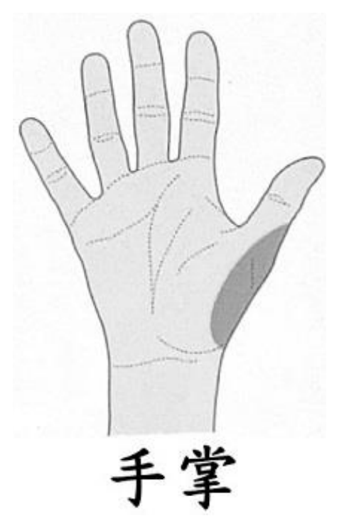

開卷有益 ／
醫師 ／ 醫學（一）（包括生物化學、解剖學、胚胎及發育生物學、組織學、生理學等科目知識及其臨床之應用） ／ 114 年第 2 次114 年第 2 次醫師醫學（一）（包括生物化學、解剖學、胚胎及發育生物學、組織學、生理學等科目知識及其臨床之應用）試題與答案
這一頁是民國 114 年第 2 次醫師醫學（一）（包括生物化學、解剖學、胚胎及發育生物學、組織學、生理學等科目知識及其臨床之應用）的整份歷屆試題，共 100 題，題目與標準答案出自考選部「國家考試試題及測驗式試題答案」開放資料，其中 100 題附有詳解。以下逐題列出題幹、選項與答案；要計時作答或記錄成績，請用線上練習。
考選部原始場次代碼：114090
線上作答這一科 →
全部 100 題
第 1 題
下列位於腦幹的神經核中，那一神經核與小腦（cerebellum）有直接且大量的神經纖維連結？
（A） 動眼神經核（oculomotor nucleus）（B） 三叉神經脊髓核（spinal trigeminal nucleus）（C） 三叉神經橋腦核（pontine trigeminal nucleus）（D） 前庭神經核（vestibular nucleus）答案：（D）
詳解與考點 正解：前庭神經核接收內耳平衡訊息，並經前庭小腦纖維與小腦，尤其絨球小結葉，具有直接且大量的連結，協調平衡與眼球運動，故選 D。
A：動眼神經核主要支配多數眼外肌，雖受小腦眼球運動系統調節，但不是與小腦直接大量相連的腦幹核。
B：三叉神經脊髓核處理臉部痛覺與溫度覺，其主要上行投射並非直接大量通往小腦。
C：三叉神經橋腦核主要處理臉部觸覺，並非前庭小腦迴路的主要核。
本題考點：前庭小腦（vestibulocerebellum）——前庭神經核（vestibular nuclei）與小腦有雙向、大量聯繫，參與平衡（equilibrium）與眼球運動控制。
第 2 題
視覺皮質（primary visual cortex）主要由下列何者供應血液？
（A） 上小腦動脈（superior cerebellar artery）（B） 前大腦動脈（anterior cerebral artery）（C） 中大腦動脈（middle cerebral artery）（D） 後大腦動脈（posterior cerebral artery）答案：（D）
詳解與考點 正解：初級視覺皮質位於枕葉距狀溝周圍，主要由後大腦動脈的皮質分支供血，故選 D。
A：上小腦動脈供應小腦上部與部分腦幹，不供應枕葉初級視覺皮質。
B：前大腦動脈主要供應大腦半球內側面的額葉與頂葉，非視覺皮質的主要供血來源。
C：中大腦動脈主要供應大腦外側面；它看似供應廣泛皮質，但初級視覺皮質位於內側枕葉，主要仍屬後大腦動脈領域。
本題考點：大腦血管供應（cerebral arterial supply）——後大腦動脈（posterior cerebral artery）主要供應枕葉與初級視覺皮質（primary visual cortex）。
第 3 題
基底核（basal ganglia）傳出的神經纖維進入下列丘腦（thalamus）的那一個核區？
（A） 腹前側核（ventral anterior nuclei）（B） 前側核（anterior nuclei）（C） 腹後外側核（ventral posterior lateral nuclei）（D） 腹後內側核（ventral posterior medial nuclei）答案：（A）
詳解與考點 正解：基底核輸出經蒼白球內節與黑質網狀部投射至丘腦腹前側核群，再影響運動皮質，故選 A。
B：前側核主要屬邊緣系統的 Papez 迴路，與基底核主要運動輸出路徑不同。
C：腹後外側核接收身體的體感覺上行訊息，主要投射至初級體感覺皮質，非基底核輸出靶點。
D：腹後內側核接收臉部感覺與味覺相關輸入，功能上不屬基底核至運動皮質的主要中繼。
本題考點：基底核迴路（basal ganglia circuit）——蒼白球內節與黑質網狀部的輸出投射至丘腦腹前側核（ventral anterior nuclei），再調節大腦皮質運動區。
第 4 題
從大腦皮質發出至脊髓的大腦皮質脊髓徑（corticospinal tract），一般不通過下列何處？
（A） 延腦的錐體（pyramid of medulla oblongata）（B） 中腦的基底腳（basis pedunculi of midbrain）（C） 橋腦的基部（basilar pons）（D） 內囊的前肢（anterior limb of internal capsule）答案：（D）
詳解與考點 正解：皮質脊髓徑自運動皮質下行，依序經內囊後肢、中腦基底腳、橋腦基部與延腦錐體；內囊前肢主要連結額葉與丘腦，故不通過前肢，選 D。
A：延腦錐體是皮質脊髓徑在延腦腹側的明顯構造，纖維並於其下端多數交叉。
B：中腦基底腳包含下行的皮質脊髓纖維，是其必經路徑。
C：皮質脊髓纖維下行穿越橋腦基部，在橋核與橫向纖維間分散通過。
本題考點：皮質脊髓徑（corticospinal tract）——下行路徑為內囊後肢、基底腳、橋腦基部、延腦錐體；錐體交叉（pyramidal decussation）形成主要的外側皮質脊髓徑。
第 5 題
在牽張反射（muscle stretch reflex）中，負責將高基氏肌腱受器（Golgi tendon organ）的訊號往脊髓傳送的神經纖維屬於下列何種類型？
（A） group Ia（B） group Ib（C） Aδ（D） C答案：（B）
詳解與考點 正解：高基氏肌腱受器偵測肌腱張力，其傳入神經纖維是 group Ib；訊號進入脊髓後參與自抑制反射，故選 B。
A：group Ia 纖維來自肌梭的初級感覺末梢，主要傳遞肌肉長度與伸展變化，不是高基氏肌腱受器訊號。
C：Aδ 纖維主要傳遞快痛、冷覺等感覺，並非本體覺受器的典型傳入纖維。
D：C 纖維為無髓鞘慢傳導纖維，常傳遞慢痛與溫覺，與肌腱張力感受無關。
本題考點：高基氏肌腱受器（Golgi tendon organ）——由 group Ib 傳入纖維傳遞張力；肌梭（muscle spindle）則以 group Ia 初級傳入纖維偵測肌肉長度。
第 6 題
下列何者位於大腦額葉？
（A） angular gyrus（B） Broca's area（C） transverse gyri of Heschl（D） cuneus答案：（B）
詳解與考點 正解：Broca 區位於優勢半球額下回後部，屬額葉，與語言表達及言語運動規劃相關，故選 B。
A：angular gyrus 位於頂葉下小葉後部，是跨感覺整合與語言相關區域，非額葉。
C：transverse gyri of Heschl 位於顳葉上表面，為初級聽覺皮質所在處。
D：cuneus 位於枕葉內側面、距狀溝上方，與視覺處理相關。
本題考點：大腦葉定位（cerebral lobe localization）——Broca's area 位於額葉（frontal lobe）；角回位於頂葉、Heschl 橫回位於顳葉、楔葉位於枕葉。
第 7 題
下列何者不含內淋巴液？
（A） 球囊（saccule）（B） 橢圓囊（utricle）（C） 耳蝸管（cochlear duct）（D） 鼓室階（scala tympani）答案：（D）
詳解與考點 正解：鼓室階位於骨性迷路，內含外淋巴液（perilymph），而非內淋巴液，故選 D。
A：球囊是膜迷路的一部分，內含內淋巴液。
B：橢圓囊亦屬膜迷路，腔內為內淋巴液。
C：耳蝸管又稱中階，是膜迷路的耳蝸部分，內含內淋巴液；它與鼓室階相鄰，容易因都在耳蝸內而混淆。
本題考點：內耳液體腔室（inner ear fluid compartments）——膜迷路（membranous labyrinth）含內淋巴液（endolymph）；骨性迷路與前庭階、鼓室階含外淋巴液（perilymph）。
第 8 題
下列神經與其支配肌肉之說明，何者錯誤？
（A） 滑車神經（trochlear nerve）支配上斜肌（superior oblique）（B） 動眼神經（oculomotor nerve）支配下斜肌（inferior oblique）（C） 動眼神經（oculomotor nerve）支配外直肌（lateral rectus）（D） 動眼神經（oculomotor nerve）支配提上眼瞼肌（levator palpebrae superioris）答案：（C）
詳解與考點 正解：本題問錯誤配對。外直肌由外旋神經支配，而不是動眼神經；動眼神經支配其餘多數眼外肌，故錯誤的是 C。
A：上斜肌由滑車神經支配，配對正確，因此不是本題答案。
B：下斜肌由動眼神經支配，敘述正確。
D：提上眼瞼肌受動眼神經支配，敘述正確；它看似與交感神經造成的眼瞼抬升容易混淆，但交感神經支配的是上瞼板肌，非提上眼瞼肌。
本題考點：眼外肌神經支配（extraocular muscle innervation）——外直肌由外旋神經（abducens nerve）支配、上斜肌由滑車神經（trochlear nerve）支配，其餘眼外肌主要由動眼神經（oculomotor nerve）支配。
第 9 題
下列何者與頰肌（buccinator）由相同的神經支配？
（A） 上直肌（superior rectus）（B） 上斜肌（superior oblique）（C） 外直肌（lateral rectus）（D） 口輪匝肌（orbicularis oris）答案：（D）
詳解與考點 正解：頰肌與口輪匝肌同為表情肌，均由顏面神經的運動纖維支配，故選 D。
A：上直肌是眼外肌，由動眼神經支配，與頰肌不同。
B：上斜肌由滑車神經支配，與顏面神經支配的頰肌不同。
C：外直肌由外旋神經支配，亦非顏面神經。
本題考點：顏面表情肌（muscles of facial expression）——頰肌（buccinator）與口輪匝肌（orbicularis oris）均由顏面神經（facial nerve）支配；眼外肌各由動眼、滑車或外旋神經支配。
第 10 題
「新式骨傳導耳機」在傳遞聲波時，省去下列那一傳遞結構？
（A） 前庭耳蝸神經（vestibulocochlear nerve）（B） 柯蒂氏器（organ of Corti）（C） 耳蝸（cochlea）（D） 外聽道（external acoustic meatus）答案：（D）
詳解與考點 正解：骨傳導耳機使振動經顱骨直接傳至耳蝸，繞過外耳與中耳的空氣傳導途徑，因此不需外聽道，故選 D。
A：前庭耳蝸神經仍須把耳蝸感受器產生的神經訊號傳至腦幹，不能省去。
B：柯蒂氏器仍負責將耳蝸內的機械振動轉換為神經訊號，是聽覺感受所必需。
C：骨傳導雖繞過外耳與中耳，振動仍需到達耳蝸以刺激感覺受器，不能省去耳蝸。
本題考點：骨傳導（bone conduction）——顱骨振動可直接刺激耳蝸（cochlea），繞過外聽道（external acoustic meatus）、鼓膜與聽小骨等空氣傳導結構。
第 11 題
當舌神經（lingual nerve）於顳下窩（infratemporal fossa）內受損時，下列那種舌乳突（papillae）的一般感覺訊息傳遞最不可能受影響？
（A） 輪廓狀乳突（vallate papillae）（B） 葉狀乳突（foliate papillae）（C） 絲狀乳突（filiform papillae）（D） 蕈狀乳突（fungiform papillae）答案：（A）
詳解與考點 正解：舌神經在顳下窩受損會影響舌前 2/3 的一般感覺；輪廓狀乳突位於界溝前方但一般感覺由舌咽神經支配，最不會受影響，故選 A。
B：葉狀乳突位於舌後外側，前部的一般感覺可受舌神經分布影響，故不是最不可能受影響者。
C：絲狀乳突遍布舌前 2/3，其一般感覺主要經舌神經傳遞，受損時可能受影響。
D：蕈狀乳突多位於舌前 2/3，其一般感覺隨舌神經傳遞；它看似同時牽涉味覺而易混淆，但本題問的是一般感覺。
本題考點：舌部感覺支配（sensory innervation of tongue）——舌神經（lingual nerve）傳遞舌前 2/3 一般感覺；輪廓狀乳突（vallate papillae）的一般感覺由舌咽神經（glossopharyngeal nerve）傳遞。
第 12 題
下頷骨角（angle of mandible）處的皮膚喪失痛覺，最可能是下列那條神經受損？
（A） 頰神經（buccal nerve）（B） 耳大神經（great auricular nerve）（C） 枕小神經（lesser occipital nerve）（D） 頦神經（mental nerve）答案：（B）
詳解與考點 正解：下頷骨角附近與腮腺表面的皮膚感覺主要由耳大神經供應，因此該處痛覺喪失最符合耳大神經受損，故選 B。
A：頰神經是三叉神經下頷支的感覺分支，主要供應頰部與口腔黏膜，不是下頷角的典型皮膚感覺神經。
C：枕小神經供應耳後與枕外側頭皮，分布較後上方，非下頷角。
D：頦神經供應下唇與頦部皮膚，位置較前方，不供應下頷骨角。
本題考點：頸神經叢皮支（cutaneous branches of cervical plexus）——耳大神經（great auricular nerve）供應耳廓周圍、腮腺區及下頷角附近皮膚；頦神經（mental nerve）則供應頦部與下唇。
第 13 題
下列何者不參與形成翼腭窩（pterygopalatine fossa）？
（A） 蝶骨（sphenoid bone）（B） 顳骨（temporal bone）（C） 腭骨（palatine bone）（D） 上頷骨（maxilla bone）答案：（B）
詳解與考點 正解：翼腭窩位於上頷骨後方、蝶骨翼突與腭骨之間，其骨壁涉及蝶骨、腭骨與上頷骨；顳骨不參與形成，故選 B。
A：蝶骨的翼突相關部分構成翼腭窩的後壁，參與其形成。
C：腭骨的垂直板構成翼腭窩的內側壁，故有參與。
D：上頷骨後面構成翼腭窩的前壁，是其重要骨性界限。
本題考點：翼腭窩（pterygopalatine fossa）——由上頷骨（maxilla）、蝶骨（sphenoid bone）與腭骨（palatine bone）共同界定；其為上頷神經及相關血管神經結構的交通區。
第 14 題
下列何者不在頸部的肌三角（muscular triangle）內？
（A） 胸骨甲狀肌（sternothyroid muscle）（B） 甲狀腺（thyroid gland）（C） 氣管（trachea）（D） 外頸動脈（external carotid artery）答案：（D）
詳解與考點 正解：肌三角是前頸三角的下內側區，包含舌骨下肌、甲狀腺、氣管等中線前頸構造；外頸動脈主要位於頸動脈三角，故選 D。
A：胸骨甲狀肌是舌骨下肌群之一，位於肌三角內。
B：甲狀腺位於前頸下部，與肌三角的內容物及臨床表面定位密切相關。
C：氣管在頸部中線下方，為肌三角內的重要深部構造。
本題考點：前頸三角（anterior triangle of neck）——肌三角（muscular triangle）含舌骨下肌、甲狀腺與氣管；頸動脈三角（carotid triangle）則與頸動脈分叉及外頸動脈關係較密切。
第 15 題
關於肋骨與胸廓（thoracic cage）的連接方式，下列敘述何者最恰當？
（A） 第一肋骨一般與第一胸椎（thoracic vertebra）以及第七頸椎（cervical vertebra）相接（B） 第九肋骨和胸骨（sternum），通常直接相連接（C） 第六肋骨與第六胸椎的下肋關節面（inferior costal facet）相連接（D） 第十一胸椎通常不含橫肋關節面（transverse costal facet），因此第十一肋骨只有其頭端（head ofrib）和第十一胸椎相接答案：（D）
詳解與考點 正解：第十一肋骨屬浮肋（floating rib），其與胸椎的關節連接較簡化。第十一胸椎通常沒有橫肋關節面，故第十一肋骨不與橫突形成肋橫突關節，而僅以肋頭和第十一胸椎椎體相接，故選 D。
A：第一肋骨的肋頭與第一胸椎椎體相接，不會與第七頸椎相接；頸椎不是第一肋骨的正常關節面。
B：第九肋骨是偽肋（false rib），其肋軟骨通常接到上方肋軟骨形成肋弓，並不直接連到胸骨。
C：典型肋骨的肋頭可與相鄰兩個胸椎椎體關節面相接；第六肋骨與第六胸椎的上肋關節面及第五胸椎的下肋關節面相關，而非第六胸椎下肋關節面。
本題考點：肋骨關節（costovertebral joints）——典型肋骨以肋頭連接相鄰椎體，並以肋結節連接橫突；浮肋（floating ribs）不形成肋橫突關節；真肋、偽肋與浮肋的胸骨連接方式不同。
第 16 題
一般情況下，下列何者負責將血壓與血液化學變化訊息傳入中樞神經系統以參與心臟反射（cardiacreflex）？
（A） 迷走神經（vagus nerve）（B） 頸部交感神經（cervical sympathetic nerve）（C） 胸部交感神經（thoracic sympathetic nerve）（D） 胸部內臟神經（thoracic splanchnic nerve）答案：（A）
詳解與考點 正解：把血壓與血液化學變化的感覺訊息傳入中樞、參與心臟反射，所問的是內臟感覺傳入路徑。主動脈弓壓受器與化學受器的傳入纖維隨迷走神經（vagus nerve）進入延腦，調節心率與血管張力，故選 A。
B：頸部交感神經主要提供交感神經節後纖維，並非將主動脈弓感受器訊息傳入中樞的主要路徑。它看似與頸部血管相近，但血管位置不等於反射傳入神經。
C：胸部交感神經主要參與心臟的交感傳出支配，使心率與收縮力上升；不負責題幹所述的主要感覺傳入。
D：胸部內臟神經主要通往腹腔與骨盆腔的自主神經節，並非心臟反射之血壓與血液化學訊息的典型傳入神經。
本題考點：心血管反射（cardiovascular reflex）——主動脈弓感受器傳入多經迷走神經，頸動脈竇傳入多經舌咽神經；交感與副交感神經對心臟的主要角色則是傳出調控。
第 17 題
有關心包膜橫竇（transverse pericardial sinus）的解剖位置描述，下列何者最恰當？
（A） 位在上腔靜脈（superior vena cava）的前方（B） 位在肺靜脈（pulmonary vein）的後方（C） 位在左心房下方（D） 位在肺動脈幹（pulmonary trunk）與主動脈（aorta）之間答案：（A）
詳解與考點 正解：心包膜橫竇（transverse pericardial sinus）位於動脈端反折與靜脈端反折之間。它在上腔靜脈的前方，且位於升主動脈與肺動脈幹的後方；外科手術可由此竇後方通過手指或鉗子以控制大動脈，故選 A。
B：肺靜脈後方及左心房後方所對應的是斜竇（oblique pericardial sinus）的區域，不是橫竇。
C：橫竇位於大血管根部附近，不在左心房下方；左心房後方的盲端隙才是斜竇的典型位置。
D：肺動脈幹與主動脈是橫竇的前方界，而非橫竇彼此夾在兩者之間；此選項看似抓到相鄰大血管，卻把前後關係錯置。
本題考點：心包膜竇（pericardial sinuses）——橫竇位在上腔靜脈前方、升主動脈與肺動脈幹後方；斜竇位於左心房後方、肺靜脈周圍。
第 18 題
下列那部分的冠狀動脈栓塞最不可能造成左心房、左心室前壁與側壁、心尖以及心室中隔缺氧？
（A） 前室間支（anterior interventricular branch）（B） 後室間支（posterior interventricular branch）（C） 右邊緣支（right marginal branch）（D） 左迴旋支（left circumflex branch）答案：（C）
詳解與考點 正解：題目列出的缺氧範圍包括左心房、左心室前壁與側壁、心尖及心室中隔，屬左冠狀動脈系統廣泛供應的區域。右邊緣支（right marginal branch）多供應右心室的急性緣，最不能解釋上述左心與中隔的廣泛缺氧，故選 C。
A：前室間支供應左心室前壁、心尖及心室中隔前段，阻塞可造成題幹範圍中多處缺氧，並非最不可能。
B：後室間支主要供應心室中隔後段及相鄰心室壁；雖不能完整涵蓋所有區域，仍可能造成中隔缺氧，較（C）接近題幹範圍。
D：左迴旋支可供應左心房與左心室側壁，冠狀動脈優勢型不同時供應範圍亦可擴大，因此不是最不可能。
本題考點：冠狀動脈分支（coronary artery branches）——前室間支供應前壁、心尖與中隔前段；左迴旋支供應左心房與左心室側壁；右邊緣支以右心室為主。
第 19 題
下列何者不具備腸繫膜（mesentery）的構造？
（A） 十二指腸下降段（descending part of duodenum）（B） 闌尾（appendix）（C） 乙狀結腸（sigmoid colon）（D） 橫結腸（transverse colon）答案：（A）
詳解與考點 正解：腸繫膜（mesentery）附著於可動的腹膜內器官。十二指腸下降段在發育後多固定於後腹壁，屬次發性腹膜後器官（secondarily retroperitoneal organ），不具腸繫膜，故選 A。
B：闌尾有闌尾繫膜（mesoappendix），其中包含闌尾血管，故具腸繫膜樣的腹膜皺襞。
C：乙狀結腸具乙狀結腸繫膜（sigmoid mesocolon），因此可動性較大。
D：橫結腸具橫結腸繫膜（transverse mesocolon），不是後腹膜固定器官。
本題考點：腹膜關係（peritoneal relations）——次發性腹膜後器官包括多數十二指腸與胰臟；闌尾、橫結腸及乙狀結腸仍有各自的腸繫膜（mesentery/mesocolon）。
第 20 題
支配胃大彎處（greater curvature of the stomach）的左胃網膜動脈（left gastroepiploic artery），源自下列那條動脈？
（A） 總肝動脈（common hepatic artery）（B） 左胃動脈（left gastric artery）（C） 後胃動脈（posterior gastric artery）（D） 脾動脈（splenic artery）答案：（D）
詳解與考點 正解：左胃網膜動脈沿胃大彎左側行走。左胃網膜動脈（left gastroepiploic artery）是脾動脈（splenic artery）的分支，之後沿大彎與右胃網膜動脈吻合，故選 D。
A：總肝動脈的分支可經胃十二指腸動脈形成右胃網膜動脈，供應胃大彎右側；不是左胃網膜動脈的來源。
B：左胃動脈主要沿胃小彎與食道腹段分布，與胃大彎的左胃網膜動脈不同。
C：後胃動脈也可源自脾動脈並供應胃底後面，但不是左胃網膜動脈的直接母幹；兩者位置相近是常見混淆點。
本題考點：胃的動脈供應（arterial supply of stomach）——左胃網膜動脈來自脾動脈，右胃網膜動脈經胃十二指腸動脈而來；兩者沿胃大彎吻合。
第 21 題
前腹壁內面的臍內側韌帶（medial umbilical fold），是因腹膜（peritoneum）包覆下列何種結構所形成？
（A） 輸精管（vas deferens）（B） 臍動脈（umbilical artery）（C） 上腹壁動脈（superior epigastric artery）（D） 肝靜脈（hepatic vein）答案：（B）
詳解與考點 正解：前腹壁的臍內側韌帶（medial umbilical fold），其隆起由腹膜覆蓋閉鎖後的臍動脈所致。臍動脈近端仍供應膀胱，遠端閉鎖形成內側臍韌帶，故選 B。
A：輸精管在骨盆腔走行，但不形成前腹壁內面的臍內側韌帶。
C：上腹壁動脈位於腹直肌後方，並非形成臍內側韌帶的遺跡；與臍外側韌帶所涉血管亦不同。
D：肝靜脈位於肝內並注入下腔靜脈，與前腹壁的腹膜皺襞無關。
本題考點：臍部腹膜皺襞（umbilical folds）——臍正中韌帶為尿囊管遺跡；臍內側韌帶為閉鎖臍動脈遺跡；外側臍皺襞覆蓋下腹壁血管。
第 22 題
前下腹壁的皮下脂肪主要存在於下列那一層？
（A） Camper's fascia（B） Scarpa's fascia（C） 腹橫筋膜（transversalis fascia）（D） 闊筋膜（fascia lata）答案：（A）
詳解與考點 正解：前下腹壁的皮下脂肪層。淺筋膜可分為富含脂肪的 Camper's fascia 與深部膜性 Scarpa's fascia；主要皮下脂肪位於 Camper's fascia，故選 A。
B：Scarpa's fascia 是淺筋膜較深的膜性層，脂肪較少，且在會陰部延續為 Colles fascia。
C：腹橫筋膜位於腹橫肌深面，屬腹壁深層筋膜，並非皮下脂肪所在層。
D：闊筋膜是大腿的深筋膜，位置已離開前下腹壁，故不符。
本題考點：腹前外側壁筋膜（anterior abdominal wall fascia）——Camper's fascia 為脂肪性淺層；Scarpa's fascia 為膜性深層；腹橫筋膜（transversalis fascia）位於肌層深面。
第 23 題
關於前列腺（prostate），下列敘述何者錯誤？
（A） 除了腺體組織（glandular tissue），也含纖維肌肉組織（fibromuscular tissue）（B） 後表面靠近直腸（rectum）（C） 其血液供應最主要來自上膀胱動脈（superior vesical artery）（D） 前列腺靜脈叢（prostatic venous plexus）和膀胱靜脈叢（vesical venous plexus）相連通答案：（C）
詳解與考點 正解：題目問錯誤敘述，關鍵在前列腺的主要動脈供應。前列腺血液主要來自下膀胱動脈、內陰部動脈與中直腸動脈的前列腺支，不是以上膀胱動脈為主，故錯誤的是 C。
A：前列腺除腺體組織外，確實含有纖維肌肉基質（fibromuscular tissue），其平滑肌可協助射精時排出前列腺分泌物，敘述正確。
B：前列腺後面緊鄰直腸前壁，因此可經直腸指診觸及，敘述正確。
D：前列腺靜脈叢與膀胱靜脈叢相通，並與椎靜脈叢有交通，敘述正確，故非本題答案。
本題考點：前列腺（prostate）——組成包括腺體與纖維肌肉組織；後方鄰直腸；主要動脈供應來自內髂動脈分支，靜脈叢與膀胱及椎靜脈叢相交通。
第 24 題
關於陰莖深背靜脈（deep dorsal vein of penis），下列敘述何者正確？
（A） 主要收集陰莖皮膚的血液（B） 走在陰莖背面，位於巴克氏筋膜（Buck's fascia）的淺層（C） 穿過陰莖襻狀韌帶（fundiform ligament of penis）進入骨盆腔（D） 進入骨盆腔後會將血液注入前列腺靜脈叢（prostatic venous plexus）答案：（D）
詳解與考點 正解：陰莖深背靜脈（deep dorsal vein of penis）的回流終點。它位在陰莖背面、深於巴克氏筋膜，穿過陰莖懸韌帶後進入骨盆腔，主要注入前列腺靜脈叢，故選 D。
A：陰莖皮膚的靜脈血主要由淺背靜脈回流；深背靜脈則收集海綿體等深部構造的血液。
B：深背靜脈位於巴克氏筋膜深層，而非淺層；淺背靜脈才位於較表淺的位置。
C：深背靜脈進入骨盆時穿過的是陰莖懸韌帶（suspensory ligament），不是較表淺的陰莖襻狀韌帶；此選項看似都涉及韌帶，卻混淆了兩者層次。
本題考點：陰莖靜脈回流（venous drainage of penis）——淺背靜脈回流皮膚與皮下組織；深背靜脈位於巴克氏筋膜深面，經陰莖懸韌帶注入前列腺靜脈叢。
第 25 題
關於男性會陰部肌肉，下列敘述何者正確？
（A） 坐骨海綿體肌（ischiocavernosus）收縮可壓迫陰莖球（bulb of penis），有助於維持陰莖勃起（B） 於排尿後期，球海綿體肌（bulbospongiosus）收縮有助於將尿道內殘留尿液排出（C） 坐骨海綿體肌（ischiocavernosus）附著於會陰體（perineal body）（D） 會陰淺橫肌（superficial transverse perineal muscle）附著於坐骨棘（ischial spine）答案：（B）
詳解與考點 正解：球海綿體肌（bulbospongiosus）對尿道球與尿道的作用。排尿末期該肌收縮可壓迫尿道球，將殘留於尿道內的尿液擠出，故選 B。
A：壓迫陰莖球的是球海綿體肌，不是坐骨海綿體肌；坐骨海綿體肌主要壓迫陰莖腳並減少靜脈回流，以維持勃起。
C：坐骨海綿體肌附著於坐骨結節與陰莖腳，並不附著於會陰體。
D：會陰淺橫肌由坐骨結節走向會陰體，不附著於坐骨棘；坐骨結節與坐骨棘都是會陰的重要標誌，卻不可互換。
本題考點：會陰淺層肌（superficial perineal muscles）——球海綿體肌協助排出尿道殘尿；坐骨海綿體肌壓迫陰莖腳、協助維持勃起；會陰淺橫肌連接坐骨結節與會陰體。
第 26 題
關於膀胱（urinary bladder）的神經支配，下列敘述何者錯誤？
（A） 下腹神經（hypogastric nerves）包含支配膀胱的交感神經纖維（sympathetic fibers）（B） 薦內臟神經（sacral splanchnic nerves）包含支配膀胱的副交感神經纖維（parasympathetic fibers）（C） 交感神經纖維（sympathetic fibers）可刺激尿道內括約肌（internal urethral sphincter）收縮（D） 副交感神經纖維（parasympathetic fibers）可刺激逼尿肌（detrusor muscle）收縮答案：（B）
詳解與考點 正解：題目問錯誤敘述，關鍵是區分薦內臟神經（sacral splanchnic nerves）與骨盆內臟神經（pelvic splanchnic nerves）。薦內臟神經是來自薦交感神經幹的交感神經纖維；膀胱的副交感神經纖維來自骨盆內臟神經，因此 B 錯誤。
A：下腹神經含有通往下腹神經叢的交感神經纖維，參與膀胱儲尿期的自主神經調控，敘述正確。
C：交感神經可促進尿道內括約肌收縮，使儲尿時尿道出口阻力增加，敘述正確。
D：副交感神經可使逼尿肌收縮，促進排尿，敘述正確，故非答案。
本題考點：膀胱自主神經支配（autonomic innervation of bladder）——交感纖維經下腹神經促進儲尿；副交感纖維經骨盆內臟神經使逼尿肌收縮；薦內臟神經屬交感而非副交感。
第 27 題
下列何者是鎖骨下動脈（subclavian artery）的直接分支？
（A） 上胸動脈（superior thoracic artery）（B） 外胸動脈（lateral thoracic artery）（C） 內胸動脈（internal thoracic artery）（D） 胸肩峰動脈（thoraco-acromial artery）答案：（C）
詳解與考點 正解：「鎖骨下動脈的直接分支」。內胸動脈（internal thoracic artery）由鎖骨下動脈直接發出，沿胸壁內面向下行走，故選 C。
A：上胸動脈是腋動脈第一段的分支，不是鎖骨下動脈的直接分支。
B：外胸動脈通常來自腋動脈第二段，供應胸壁外側與乳房周圍。
D：胸肩峰動脈也是腋動脈第二段分支；它看似供應胸肩區，容易與位於鎖骨附近的鎖骨下動脈混淆。
本題考點：鎖骨下動脈分支（branches of subclavian artery）——內胸動脈為其直接分支；腋動脈則發出上胸、外胸與胸肩峰動脈等供應胸壁及肩帶的分支。
第 28 題
下列何動作不是大腿前肌群的作用？
（A） 彎曲髖關節（flex hip joint）（B） 外旋大腿（laterally rotate thigh）（C） 伸直膝關節（extend knee joint）（D） 伸直髖關節（extend hip joint）答案：（D）
詳解與考點 正解：題目問不是大腿前肌群的作用。大腿前肌群以髖屈曲與膝伸直為主，縫匠肌也可外旋大腿；髖伸直則主要由臀大肌與大腿後肌群完成，故選 D。
A：股直肌可彎曲髖關節，縫匠肌亦可協助髖屈曲，故是前肌群可有的動作。
B：縫匠肌可使大腿外旋；雖非所有前肌群共有的主要動作，但仍可由此肌完成，故不能選。
C：股四頭肌是膝關節的主要伸肌，屬大腿前肌群最核心的功能之一。
本題考點：大腿前肌群（anterior compartment of thigh）——股四頭肌伸膝，股直肌屈髖，縫匠肌可屈髖、外旋大腿；髖伸直主要由臀大肌與大腿後肌群負責。
第 29 題
下圖黑色陰影區域的表皮感覺神經來自：

（A） 正中神經（median nerve）（B） 肌皮神經（musculocutaneous nerve）（C） 橈神經（radial nerve）（D） 尺神經（ulnar nerve）答案：（C）
詳解與考點 正解：官方答案為 C。圖中陰影位於拇指側手掌的外緣、接近魚際與腕部的區域；若此圖意在標示橈側手部的表淺皮感覺支配，則可歸於橈神經（radial nerve）的淺支（superficial branch）。惟圖示為手掌面，該陰影位置與正中神經掌皮支常見的魚際皮膚分布有所重疊，單憑此簡略圖難以完全排除正中神經
A：正中神經（median nerve）經掌皮支支配魚際及外側手掌皮膚，並以指掌側總指神經支配拇指、食指、中指及無名指橈側半的掌面；因此它看似可解釋圖中的魚際鄰近區域，但依本題官方圖示的指定區域，非其欲考的答案。
B：肌皮神經（musculocutaneous nerve）的終支為前臂外側皮神經（lateral cutaneous nerve of forearm），主要支配前臂外側皮膚，不會延伸為手掌拇指側的主要表皮感覺神經，故不符。
D：尺神經（ulnar nerve）主要支配小指側手掌、第五指及第四指尺側半的掌側皮膚；圖中陰影在拇指側而非小指側，位置方向相反，故不符。
本題考點：手部皮膚感覺支配（cutaneous innervation of the hand）——橈神經淺支（superficial branch of radial nerve）以手背橈側為主；正中神經（median nerve）主要支配外側手掌與外側 3又1/2 指掌面；尺神經（ulnar nerve）主要支配內側手掌與內側 1又1/2 指。
第 30 題
股骨（femur）的內收結節（adductor tubercle）位於何處？
（A） 大轉子（greater trochanter）內側（B） 內上髁（medial epicondyle）上方（C） 外上髁（lateral epicondyle）下方（D） 小轉子（lesser trochanter）外方答案：（B）
詳解與考點 正解：內收結節（adductor tubercle）為大收肌腱附著的骨性標誌。它位於股骨遠端內側、內上髁（medial epicondyle）上方，故選 B。
A：大轉子位於股骨近端外側，是臀肌與深層外旋肌的重要附著處，並非內收結節位置。
C：外上髁在股骨遠端外側，與名稱中的「內收」及內側位置不符。
D：小轉子位於股骨近端後內側，是髂腰肌附著點，不是大收肌腱的終點。
本題考點：股骨骨標誌（bony landmarks of femur）——內收結節位於內上髁上方，為大收肌腱部附著處；大、小轉子皆位於近端。
第 31 題
下列何者不是膕動脈（popliteal artery）的分支？
（A） 降膝動脈（descending genicular artery）（B） 上膝動脈（superior genicular artery）（C） 中膝動脈（middle genicular artery）（D） 下膝動脈（inferior genicular artery）答案：（A）
詳解與考點 正解：題目問不是膕動脈（popliteal artery）分支者。降膝動脈（descending genicular artery）在膝上由股動脈發出，參與膝關節周圍吻合，並非膕動脈分支，故選 A。
B：上膝動脈是膕動脈的膝關節支，分為內側與外側上膝動脈，敘述所指類別正確。
C：中膝動脈由膕動脈發出，穿入膝關節囊供應十字韌帶等構造，故非答案。
D：下膝動脈亦屬膕動脈的膝關節支，分為內側與外側下膝動脈。
本題考點：膕動脈分支（branches of popliteal artery）——包括上、中、下膝動脈與腓腸動脈支；降膝動脈則來自股動脈。
第 32 題
下列何者不是由神經嵴細胞（neural crest cell）衍生而成？
（A） 黑色素細胞（melanocyte）（B） 交感節後神經元（postganglionic sympathetic neuron）（C） 甲狀腺之濾泡細胞（follicular cell of thyroid gland）（D） 腎上腺髓質之嗜鉻細胞（chromaffin cell of adrenal medulla）答案：（C）
詳解與考點 正解：題目問非神經嵴細胞（neural crest cell）衍生物。甲狀腺濾泡細胞源自正中內胚層的甲狀腺憩室，因此不是神經嵴衍生，故選 C。
A：黑色素細胞由神經嵴遷移至皮膚後分化而來，是典型神經嵴衍生物。
B：交感節後神經元屬周邊自主神經系統神經元，來自神經嵴，敘述正確。
D：腎上腺髓質嗜鉻細胞是經修飾的交感節後神經元，同樣來自神經嵴，故不是答案。
本題考點：神經嵴衍生物（neural crest derivatives）——包括黑色素細胞、周邊神經節細胞及腎上腺髓質嗜鉻細胞；甲狀腺濾泡細胞則源自內胚層（endoderm）。
第 33 題
舌（tongue）的發育過程中，那一咽弓會形成聯合部（copula），且最後會被擠壓而消失？
（A） 第一咽弓（first pharyngeal arch）（B） 第二咽弓（second pharyngeal arch）（C） 第三咽弓（third pharyngeal arch）（D） 第四咽弓（fourth pharyngeal arch）答案：（B）
詳解與考點 正解：舌發育時暫時形成聯合部（copula）而後被其他咽弓組織覆蓋的咽弓。第二咽弓形成 copula，但其生長後被第三咽弓的下咽隆起壓過並消失，故選 B。
A：第一咽弓形成舌前三分之二的外側舌隆起與正中舌隆起，並非題幹所稱最後消失的 copula。
C：第三咽弓主要形成舌後三分之一，且其組織覆蓋第二咽弓，而不是自己被擠壓消失。
D：第四咽弓參與最後端與會厭附近的舌根發育，非 copula 消失的來源。
本題考點：舌發育（development of tongue）——第一咽弓形成舌前2/3；第二咽弓形成的 copula 後來消失；第三咽弓形成舌後1/3；第四咽弓參與最後端舌根。
第 34 題
女性陰道（vagina）的發育，是由下列那兩個構造共同形成？
（A） 中腎管（mesonephric duct）與尿殖竇（urogenital sinus）（B） 中腎管（mesonephric duct）與竇陰道球泡（sinovaginal bulb）（C） 副中腎管（paramesonephric duct）與竇陰道球泡（sinovaginal bulb）（D） 副中腎管（paramesonephric duct）與生殖結節（genital tubercle）答案：（C）
詳解與考點 正解：女性陰道有不同胚胎來源。陰道上部主要來自融合的副中腎管（paramesonephric ducts），下部則由尿殖竇衍生的竇陰道球泡（sinovaginal bulbs）形成，故選 C。
A：中腎管主要參與男性生殖道形成，並非女性陰道的主要來源。
B：竇陰道球泡確實參與陰道下部形成，但搭配的不是中腎管，而是副中腎管。
D：生殖結節主要形成陰蒂，並不構成陰道；此選項將外生殖器與內生殖道的胚胎來源混淆。
本題考點：女性生殖道發育（development of female genital tract）——副中腎管形成子宮、輸卵管及陰道上部；竇陰道球泡形成陰道下部；生殖結節形成外生殖器的一部分。
第 35 題
內側臍韌帶（medial umbilical ligament）主要為何構造的遺跡？
（A） 臍動脈（umbilical artery）（B） 臍靜脈（umbilical vein）（C） 靜脈導管（ductus venosus）（D） 動脈導管（ductus arteriosus）答案：（A）
詳解與考點 正解：內側臍韌帶（medial umbilical ligament）是胎兒血管閉鎖後的遺跡。臍動脈的遠端閉鎖形成內側臍韌帶，近端則保留為供應膀胱的血管，故選 A。
B：臍靜脈閉鎖後形成肝的圓韌帶（ligamentum teres hepatis），不是內側臍韌帶。
C：靜脈導管閉鎖後形成靜脈韌帶（ligamentum venosum），位於肝臟，故不符。
D：動脈導管閉鎖後形成動脈韌帶（ligamentum arteriosum），位於肺動脈幹與主動脈弓之間，非腹前壁構造。
本題考點：胎兒循環遺跡（fetal circulatory remnants）——臍動脈遠端形成內側臍韌帶；臍靜脈形成肝圓韌帶；靜脈導管形成靜脈韌帶；動脈導管形成動脈韌帶。
第 36 題
神經垂體部（neurohypophysis）是衍生自：
（A） 端腦（telencephalon）（B） 間腦（diencephalon）（C） 中腦（mesencephalon）（D） 髓腦（myelencephalon）答案：（B）
詳解與考點 正解：神經垂體部的胚胎來源。神經垂體包含漏斗與後葉，為第三腦室底部向下延伸形成的神經外胚層構造；第三腦室周圍屬間腦（diencephalon），故選 B。相對地，腺垂體才是由口腔外胚層的 Rathke 囊發育而來。
A：端腦（telencephalon）主要發育為大腦半球、基底核等構造，並非神經垂體的來源。
C：中腦（mesencephalon）發育為中腦本身及其相關構造，與神經垂體的漏斗來源不符。
D：髓腦（myelencephalon）發育為延腦，位於後腦範圍，並非下視丘－神經垂體系統的胚胎來源。
本題考點：腦泡分化（brain vesicle differentiation）——間腦形成下視丘與神經垂體；垂體發生（pituitary development）——神經垂體源自神經外胚層，腺垂體源自 Rathke 囊的口腔外胚層。
第 37 題
下列那個接合構造，不會出現在上皮細胞的側面（lateral domain）？
（A） 間隙接合（gap junction）（B） 黏連接合（adhering junction）（C） 半橋粒（hemidesmosome）（D） 緊密接合（tight junction）答案：（C）
詳解與考點 正解：「上皮細胞的側面」。上皮細胞的側面負責與相鄰細胞連結，可見緊密接合、黏連接合與間隙接合；半橋粒（hemidesmosome）則將細胞基底面連到基底板，故不出現在側面，選 C。
A：間隙接合（gap junction）位於相鄰細胞的側面，以 connexon 形成細胞間通道，讓離子及小分子傳遞，故非答案。
B：黏連接合（adhering junction）是細胞－細胞接合，常位於側面並連結肌動蛋白絲，故非答案。
D：緊密接合（tight junction）位於上皮細胞頂端側面的交界處，封閉細胞間隙並維持極性，故非答案。
本題考點：上皮細胞極性（epithelial polarity）——側面以細胞－細胞接合為主；半橋粒（hemidesmosome）是基底面細胞－基質接合，連結中間絲與基底板。
第 38 題
下列有關成熟骨骼肌細胞（skeletal muscle cell）的敘述，何者正確？
（A） 相鄰的細胞之間藉由間隙接合（gap junction）傳遞訊息（B） 細胞膜（plasma membrane）內凹形成終池（terminal cisternae）（C） 一個終池與兩條相鄰的 T 小管（T tubules）共同組成三聯體（triad）（D） 三聯體（triad）分布於肌節（sarcomere）的明帶與暗帶交接處（A-I junction）答案：（D）
詳解與考點 正解：骨骼肌三聯體的組成與位置。骨骼肌的三聯體（triad）由一條 T 小管夾在兩個肌漿網終池（terminal cisternae）之間，分布於肌節的明帶與暗帶交接處（A-I junction），故正確為 D。
A：成熟骨骼肌纖維彼此獨立，收縮訊號由運動終板引發，並不靠相鄰細胞的間隙接合（gap junction）傳遞；心肌才常以間隙接合進行電性耦合。
B：終池是肌漿網（sarcoplasmic reticulum）的膨大部位，不是肌細胞膜（plasma membrane）內凹形成；細胞膜內凹形成的是 T 小管。
C：此選項把三聯體的數目顛倒。正確是兩個終池加一條 T 小管，而非一個終池加兩條 T 小管；它看似合理是因為終池確實緊鄰 T 小管，但組成比例錯誤。
本題考點：興奮－收縮耦合（excitation-contraction coupling）——T 小管把動作電位導入肌纖維，兩側終池釋放 Ca2+；骨骼肌三聯體（triad）位於 A-I junction。
第 39 題
下列何者不存在於關節面的軟骨（cartilage of articular surface）？
（A） 軟骨膜（perichondrium）（B） 玻尿酸（hyaluronan）（C） 透明軟骨（hyaline cartilage）（D） 同源細胞群（isogenous group）答案：（A）
詳解與考點 正解：關節面的軟骨。關節面覆蓋的是透明軟骨（hyaline cartilage），為了讓關節腔內的軟骨面能直接與滑液接觸，表面沒有軟骨膜（perichondrium），故選 A。
B：玻尿酸（hyaluronan）是透明軟骨細胞外基質中聚醣聚合物的重要成分，亦與滑液的黏彈性有關，並非不存在。
C：多數滑膜關節的關節面由透明軟骨（hyaline cartilage）覆蓋，正是本題所問的軟骨種類。
D：同源細胞群（isogenous group）反映軟骨細胞分裂後聚集的形態，可見於軟骨組織，並非關節軟骨所排除的構造。
本題考點：關節軟骨（articular cartilage）——屬透明軟骨但缺乏軟骨膜，營養主要來自滑液；軟骨基質（cartilage extracellular matrix）含 type II collagen 與 proteoglycan-hyaluronan 聚合體。
第 40 題
關於骨生成（bone formation）的敘述，何者正確？
（A） 扁平骨（flat bone）的生成主要是靠軟骨內骨化作用（endochondral ossification）（B） 膜內骨化（intramembranous ossification）時，骨針（spicule）加大並形成骨小樑連結（trabecularnetwork），使骨增厚，稱做間質性生長（interstitial growth）（C） 長骨（long bone）進行軟骨內骨化（endochondral ossification）時，會出現初級及次級的骨化中心（primary and secondary ossification centers）（D） 軟骨內骨化（endochondral ossification）時，蝕骨細胞（osteoclast）會在肥大區（zone ofhypertrophy）中分解骨質答案：（C）
詳解與考點 正解：長骨的軟骨內骨化。長骨先形成透明軟骨模型，骨幹先出現初級骨化中心（primary ossification center），之後骨骺再出現次級骨化中心（secondary ossification center），故選 C。
A：扁平骨如顱骨穹隆主要由膜內骨化（intramembranous ossification）形成，不是以軟骨模型為基礎的軟骨內骨化。
B：膜內骨化中骨針增大、骨小樑互連是骨的沉積與塑形；骨組織的增厚屬附加性生長（appositional growth），不是間質性生長（interstitial growth）。
D：軟骨內骨化時，肥大區的軟骨基質會鈣化並被侵入的血管與細胞取代；蝕骨細胞主要吸收已形成的骨質，不是在肥大區分解骨質。
本題考點：軟骨內骨化（endochondral ossification）——長骨具有初級與次級骨化中心；膜內骨化（intramembranous ossification）——間葉細胞直接分化為成骨細胞，是扁平骨形成的主要方式。
第 41 題
交感神經節（sympathetic ganglion）內的神經元，多屬於下列何種形態？
（A） 多極型（multipolar）神經元（B） 雙極型（bipolar）神經元（C） 偽單極（pseudounipolar）神經元（D） 偽單極（pseudounipolar）神經元與雙極型（bipolar）神經元混合答案：（A）
詳解與考點 正解：交感神經節內的節後神經元。自主神經節的神經元通常有一個軸突與多個樹突，形態屬多極型（multipolar）神經元，故選 A。
B：雙極型（bipolar）神經元主要見於特殊感覺路徑，如視網膜、嗅覺上皮與前庭蝸神經節，並非交感神經節的典型形態。
C：偽單極（pseudounipolar）神經元是背根神經節與部分腦神經感覺神經節的初級感覺神經元，與交感節後神經元不同。
D：交感神經節不是由偽單極與雙極型神經元混合組成；此選項混淆了感覺神經節與自主神經節的細胞形態。
本題考點：神經元形態（neuronal morphology）——多極型神經元常見於運動與自主神經節；偽單極神經元主要傳遞周邊感覺訊息；雙極型神經元與特殊感覺相關。
第 42 題
下列何種細胞最不可能出現在嗅覺上皮（olfactory epithelium）？
（A） 支持細胞（supporting cell）（B） 基底細胞（basal cell）（C） 刷狀細胞（brush cell）（D） 杯狀細胞（goblet cell）答案：（D）
詳解與考點 正解：嗅覺上皮的細胞組成。嗅覺上皮是特化的假複層上皮，含嗅覺受器神經元、支持細胞、基底細胞及刷狀細胞；它不以分泌黏液的杯狀細胞（goblet cell）為典型成分，故選 D。
A：支持細胞（supporting cell）位於嗅覺上皮內，提供嗅覺受器神經元結構與代謝上的支持。
B：基底細胞（basal cell）是嗅覺上皮的幹／前驅細胞來源，可參與上皮細胞更新，故可出現。
C：刷狀細胞（brush cell）可見於嗅覺上皮，具微絨毛並與感覺神經末梢相關，故非答案。
本題考點：嗅覺上皮（olfactory epithelium）——主要細胞包括嗅覺受器神經元、支持細胞、基底細胞與刷狀細胞；嗅腺分泌物提供嗅覺纖毛所需環境，而非由杯狀細胞主導。
第 43 題
消化道中，下列何者不與其它三者位於同一器官？
（A） 絨毛（villi）（B） 乳糜管（lacteal）（C） 環皺襞（plicae circulares）（D） 結腸帶（teniae coli）答案：（D）
詳解與考點 正解：「不與其他三者位於同一器官」。絨毛（villi）、乳糜管（lacteal）及環皺襞（plicae circulares）都是小腸增加吸收面積的構造；結腸帶（teniae coli）是大腸結腸外層縱走平滑肌增厚形成，故選 D。
A：絨毛（villi）突出於小腸黏膜表面，增加吸收面積，與乳糜管及環皺襞同屬小腸構造。
B：乳糜管（lacteal）位於小腸絨毛中央，吸收乳糜微粒等脂質運輸相關成分，故位於小腸。
C：環皺襞（plicae circulares）由黏膜與黏膜下層共同形成，尤其在空腸明顯，屬小腸構造。
本題考點：小腸吸收構造（small intestinal absorptive structures）——環皺襞、絨毛與微絨毛依序增加表面積，絨毛內乳糜管參與脂質吸收；結腸帶（teniae coli）是大腸特徵。
第 44 題
有關表皮（epidermis）中的蘭氏細胞（Langerhans cell）之敘述，何者正確？
（A） 均勻分布在表皮的五層細胞中（B） 常發現在基底層（stratum basale）（C） 是抗原呈現細胞（antigen-presenting cell）（D） 為機械性受器（mechanoreceptor）答案：（C）
詳解與考點 正解：蘭氏細胞的免疫功能。蘭氏細胞（Langerhans cell）是表皮中的樹突細胞，能攝取、處理並呈現抗原給 T 細胞，故是抗原呈現細胞（antigen-presenting cell），選 C。
A：蘭氏細胞不會均勻分布於表皮五層，而以棘狀層（stratum spinosum）較常見。
B：基底層（stratum basale）主要可見具增殖能力的角質形成細胞與黑色素細胞；蘭氏細胞通常不是此層的主要位置。
D：表皮的機械性受器是梅克爾細胞（Merkel cell），不是蘭氏細胞；兩者皆位於表皮使此選項看似相關，但功能一為觸覺感受、一為免疫監視。
本題考點：蘭氏細胞（Langerhans cell）——表皮樹突細胞，執行抗原呈現（antigen presentation）；梅克爾細胞（Merkel cell）——與觸覺相關的機械性受器。
第 45 題
關於甲狀腺濾泡（thyroid follicle）構造和功能的敘述，下列何者正確？
（A） 甲狀腺是由許多大小相似（直徑約 2 mm）之甲狀腺濾泡所組成（B） 甲狀腺濾泡細胞（follicular cell）環繞甲狀腺膠體（colloid）所構成的甲狀腺濾泡，是甲狀腺的基本構造單位（C） 甲狀腺球蛋白（thyroglobulin）在濾泡細胞內，經甲狀腺氧化酶（thyroid oxidase）進行碘化作用，再送至膠體（colloid）內（D） 濾泡細胞（follicular cell）的主要功能是分泌降鈣素（calcitonin）答案：（B）
詳解與考點 正解：甲狀腺濾泡的基本構造。甲狀腺的基本單位是單層濾泡細胞（follicular cell）圍成的濾泡，腔內儲存含甲狀腺球蛋白的膠體（colloid），故選 B。
A：甲狀腺濾泡大小並不相同，會隨功能狀態改變；以「許多大小相似且直徑約 2 mm」描述不正確。
C：甲狀腺球蛋白分泌至濾泡腔的膠體後，碘化與偶聯反應主要在膠體與濾泡頂端膜交界處進行，不是在濾泡細胞內完成後才送入膠體。
D：降鈣素（calcitonin）由濾泡旁細胞（parafollicular cell，C cell）分泌；濾泡細胞主要參與甲狀腺素的合成、儲存與釋放。
本題考點：甲狀腺濾泡（thyroid follicle）——濾泡細胞圍繞膠體，是甲狀腺的基本構造單位；甲狀腺素生合成（thyroid hormone synthesis）——甲狀腺球蛋白的碘化與儲存和膠體密切相關。
第 46 題
下列關於前列腺（prostate gland）的敘述，何者正確？
（A） 男嬰的前列腺中可觀察到許多鈣化的前列腺凝結體（prostatic concretion）（B） 前列腺癌（prostatic carcinoma）最常發生於過渡區（transitional zone）（C） 前列腺的中央區（central zone）為前列腺腺體組織的最大區域（D） 腺體種類屬於管泡腺（tubuloalveolar gland）答案：（D）
詳解與考點 正解：前列腺的腺體分類。前列腺由分枝的腺泡與導管組成，組織學上屬複合管泡腺（tubuloalveolar gland），故選 D。
A：前列腺凝結體（prostatic concretion）隨年齡增加較常見，男嬰前列腺不會有許多鈣化凝結體。
B：前列腺癌最常起源於周邊區（peripheral zone），不是過渡區（transitional zone）；過渡區較常與良性前列腺增生相關，因此此項是常見誘答。
C：前列腺腺體組織最大的區域是周邊區，中央區並非最大區域。
本題考點：前列腺分區（prostatic zonal anatomy）——周邊區是前列腺癌常見起源處，過渡區常見良性前列腺增生；腺體分類（gland classification）——前列腺為複合管泡腺。
第 47 題
將人體紅血球置入下列何種溶液之中，最容易見到細胞體積脹大？
（A） 100 mM NaCl + 200 mM KCl（B） 100 mM NaCl + 200 mM 尿素（C） 100 mM NaCl + 200 mM 葡萄糖（D） 100 mM NaCl + 100 mM 葡萄糖答案：（B）
詳解與考點 正解：紅血球體積由「有效滲透粒子」而非單純總濃度決定。尿素可穿過紅血球膜，故（B）100 mM NaCl+200 mM 尿素中的尿素不能持續維持細胞外張力；水進入細胞，紅血球最容易脹大。故選 B。
A：NaCl 與 KCl 所提供的離子在短時間內可維持細胞外有效張力，總有效滲透壓高，水傾向離開紅血球而使其縮小，不會最容易脹大。
C：葡萄糖相較尿素較能作為有效滲透粒子維持細胞外張力；（C）的 100 mM NaCl 加 200 mM 葡萄糖不會像（B）因尿素快速透膜而顯著降低有效張力。
D：100 mM NaCl 加 100 mM 葡萄糖的有效張力亦高於（B）中僅剩 NaCl 所能維持的張力，水進入細胞的趨勢較小。
本題考點：張力（tonicity）——決定細胞容積的是不能自由跨膜的有效滲透粒子；穿透性溶質（penetrating solute）如尿素可逐漸進入細胞，降低其維持細胞外張力的效果。
第 48 題
有關骨骼肌纖維（skeletal muscle fiber）的終板電位（endplate potential, EPP），下列描述何者最為適當？
（A） 從運動神經纖維末梢釋放的乙醯膽鹼（acetylcholine）會與肌漿膜（sarcolemma）上的蕈毒型受器（muscarinic receptor）結合，因而產生 EPP（B） EPP 是因為大量鉀離子（K+）流入肌纖維內所造成的一種動作電位（action potential）（C） EPP 會沿著橫小管（transverse tubule）傳遞到骨骼肌纖維內部，促使肌漿網（sarcoplasmicreticulum）釋放鈣離子（D） 肉毒桿菌毒素（botulinum toxin）中毒會使運動神經纖維末梢不易釋放乙醯膽鹼，使得 EPP 變小，最終導致肌肉無法收縮答案：（D）
詳解與考點 正解：肉毒桿菌毒素對神經肌肉接頭的作用。肉毒桿菌毒素（botulinum toxin）抑制運動神經末梢釋放乙醯膽鹼（acetylcholine），使終板電位（endplate potential, EPP）振幅變小，若未達閾值便無法引發肌纖維動作電位與收縮，故選 D。
A：骨骼肌運動終板的乙醯膽鹼受器是菸鹼型（nicotinic）受器，不是蕈毒型（muscarinic）受器。
B：EPP 是局部、漸變性的去極化電位，不是動作電位；主要是終板菸鹼型受器開啟後 Na+ 內流大於 K+ 外流所致，而非大量 K+ 流入。
C：EPP 本身侷限於終板區；達閾值後引發的肌纖維動作電位才會沿肌漿膜及 T 小管傳遞，故此項混淆 EPP 與其後續動作電位。
本題考點：神經肌肉接頭（neuromuscular junction）——乙醯膽鹼作用於菸鹼型受器產生 EPP；終板電位（endplate potential）是局部漸變電位，觸發肌纖維動作電位後才啟動興奮－收縮耦合。
第 49 題
某一病人罹患中風後講話流利，但卻出現閱讀上的困難，下列何者最有可能是發生病變的位置？
（A） Wernicke's area（B） Broca's area（C） angular gyrus（D） arcuate fasciculus本題送分，無標準答案
詳解與考點 本題官方公告送分。
第 50 題
下列那個腦區和恐懼情緒最直接相關？
（A） 視上核（supraoptic nucleus）（B） 視叉上核（suprachiasmatic nucleus）（C） 杏仁核（amygdaloid nucleus）（D） 海馬迴（hippocampus）答案：（C）
詳解與考點 正解：「恐懼情緒最直接相關」。杏仁核（amygdaloid nucleus）參與恐懼刺激的情緒評估、恐懼制約與自主神經反應整合，故選 C。
A：視上核（supraoptic nucleus）主要合成 vasopressin 與 oxytocin，與水分調節及相關內分泌功能較直接相關。
B：視叉上核（suprachiasmatic nucleus）是主要晝夜節律時鐘，接受視網膜光照訊號，不是恐懼情緒的核心構造。
D：海馬迴（hippocampus）與情境記憶及空間記憶密切相關，雖可參與恐懼情境記憶，但恐懼情緒反應最直接的核心是杏仁核。
本題考點：邊緣系統（limbic system）——杏仁核處理恐懼與情緒顯著性；海馬迴主要參與情境與陳述性記憶；視叉上核調控晝夜節律。
第 51 題
下列有關自主神經系統的敘述，何者最不適當？
（A） 自主神經系統的交感部門也稱為頭薦部門（B） 交感神經系統的節前運動神經元釋放的神經傳導物質主要是乙醯膽鹼（C） 副交感神經系統的節後運動神經元釋放的神經傳導物質主要是乙醯膽鹼（D） 與交感神經相較，副交感神經系統的自主神經節一般比較靠近標的組織答案：（A）
詳解與考點 正解：「最不適當」的自主神經系統敘述。交感神經的節前神經元來自胸腰髓，故交感部門稱胸腰部門（thoracolumbar division），不是頭薦部門；頭薦部門是副交感神經，故選 A。
B：交感神經系統的節前運動神經元主要釋放乙醯膽鹼（acetylcholine）作用於神經節受器，敘述正確，非答案。
C：副交感神經系統的節後運動神經元主要釋放乙醯膽鹼，作用於標的器官的蕈毒型受器，敘述正確，非答案。
D：副交感神經節多位於標的器官附近或器官壁內，因此相較交感神經節更靠近標的組織，敘述正確，非答案。
本題考點：自主神經解剖（autonomic nervous system anatomy）——交感神經是胸腰部門（thoracolumbar division），副交感神經是頭薦部門（craniosacral division）；兩系統節前纖維皆主要釋放 acetylcholine。
第 52 題
神經傳導物質（neurotransmitter）與其相對應的代謝型受體（metabotropic receptor）之配對，何者正確？
（A） norepinephrine→α1 receptor（B） histamine→5-HT1 receptor（C） acetylcholine→nicotinic receptor（D） glutamate→AMPA receptor答案：（A）
詳解與考點 正解：代謝型受體（metabotropic receptor）必須是 G 蛋白偶聯受體。norepinephrine 的 α1 receptor 是 G 蛋白偶聯受體，屬代謝型受體，故選 A。
B：histamine 應作用於 histamine receptor，如 H1、H2 等；5-HT1 receptor 是 serotonin 的受體，配對錯誤。
C：acetylcholine 的 nicotinic receptor 是配體門控離子通道（ionotropic receptor），不是代謝型受體；乙醯膽鹼的 muscarinic receptor 才是代謝型。
D：glutamate 的 AMPA receptor 是配體門控陽離子通道，屬離子型受體，不是代謝型受體；glutamate 的 metabotropic glutamate receptor 才符合題意。
本題考點：代謝型受體（metabotropic receptor）——多為 G protein-coupled receptor，如 adrenergic α1 receptor、muscarinic receptor；離子型受體（ionotropic receptor）——如 nicotinic receptor 與 AMPA receptor，直接形成離子通道。
第 53 題
人在移動時能感受到垂直加速，最主要是下列那一個構造之功能？
（A） 半規管（semicircular canal）（B） 橢圓囊（utricle）（C） 球囊（saccule）（D） 柯蒂氏器（organ of Corti）答案：（C）
詳解與考點 正解：「垂直加速」。耳石器中球囊（saccule）的斑主要感受垂直線性加速與重力造成的位移，因此人在上下移動時最主要依賴球囊，故選 C。
A：半規管（semicircular canal）主要感受角加速，例如轉頭時的旋轉運動，不是垂直線性加速。
B：橢圓囊（utricle）的斑主要感受水平線性加速；它與球囊同為耳石器，因而看似合理，但感受方向不同。
D：柯蒂氏器（organ of Corti）是耳蝸內的聽覺受器，將聲波引起的振動轉換為神經訊號，不負責偵測身體加速。
本題考點：前庭覺（vestibular sensation）——半規管感受角加速；耳石器（otolith organs）感受線性加速與重力，其中橢圓囊偏水平、球囊偏垂直。
第 54 題
在副交感神經系統興奮的情況下，下列何者有關眼球之變化最不可能發生？
（A） 睫狀體（ciliary body）的環肌傾向處於收縮狀態（B） 懸繫小帶（zonule）的張力傾向變低（C） 水晶體的形狀傾向變薄變長（D） 瞳孔傾向變小答案：（C）
詳解與考點 正解：副交感神經興奮時的近距離調節。副交感神經使睫狀體環肌收縮，懸繫小帶（zonule）張力下降，水晶體因自身彈性變厚、曲率增加以利看近物；因此「水晶體變薄變長」最不可能發生，故選 C。
A：睫狀體（ciliary body）的環肌在副交感刺激下收縮，是近距離調節的起始變化，故非答案。
B：環肌收縮使睫狀體向內移動，懸繫小帶張力降低，敘述正確，故非答案。
D：副交感神經支配瞳孔括約肌收縮，造成縮瞳（miosis），有助近距離視物，故非答案。
本題考點：調節反射（accommodation reflex）——副交感神經使睫狀肌收縮、懸繫小帶鬆弛與水晶體變厚；瞳孔反射（pupillary light reflex）——副交感活性使瞳孔縮小。
第 55 題
在一般開始運動的最初幾秒鐘內，骨骼肌所需 ATP 最可能之來源為何？
（A） 脂肪酸（fatty acid）（B） 葡萄糖（glucose）（C） 蛋白質（protein）（D） 磷酸肌胺酸（creatine phosphate）答案：（D）
詳解與考點 正解：「開始運動的最初幾秒鐘」。骨骼肌內預存 ATP 很少，剛開始收縮時最快速的 ATP 再生系統是磷酸肌胺酸（creatine phosphate）經 creatine kinase 將高能磷酸基轉給 ADP，因此選 D。
A：脂肪酸（fatty acid）氧化可供應較長時間、較低至中等強度運動的能量，但動員與氧化速度不足以作為最初幾秒的主要 ATP 來源。
B：葡萄糖（glucose）可經糖解作用供能，但最初幾秒鐘首先由磷酸肌胺酸系統緩衝 ATP；葡萄糖在短時間高強度活動中很重要，卻不是最先的主要來源。
C：蛋白質（protein）通常不是一般運動初期的主要能源，僅在特定代謝狀態下有較小貢獻。
本題考點：磷酸原系統（phosphagen system）——磷酸肌胺酸藉 creatine kinase 快速再生 ATP，供應運動起始的短暫高功率需求；能量代謝時序（energy metabolism）——之後才更依賴糖解與氧化磷酸化。
第 56 題
與第 1 型骨骼肌纖維相比，2X 型骨骼肌纖維有何不同？
（A） 2X 型纖維有更多粒線體（B） 2X 型纖維更容易疲勞（C） 2X 型纖維有更豐富的肌紅蛋白（myoglobin）（D） 2X 型肌肉纖維之微血管供應較多答案：（B）
詳解與考點 正解：比較第 1 型與 2X 型骨骼肌纖維的代謝特性。2X 型屬快速醣解型纖維，收縮快且主要仰賴無氧醣解，氧化代謝能力較低，因此耐疲勞性差、較容易疲勞，故選 B。
A：較多粒線體是第 1 型氧化型纖維的特徵，可支持持久收縮；2X 型粒線體較少，故錯。
C：肌紅蛋白豐富使纖維呈紅色且利於氧儲存，這是第 1 型纖維的特徵；2X 型肌紅蛋白較少。
D：較密集的微血管供應用以提供氧氣並帶走代謝物，符合第 1 型纖維；2X 型的微血管供應較少。
本題考點：骨骼肌纖維分類（skeletal muscle fiber types）；第 1 型纖維以氧化代謝、粒線體與肌紅蛋白豐富見長，2X 型纖維則以快速收縮、醣解能力高但易疲勞為特徵。
第 57 題
下列關於血栓溶解機制的敘述，何者錯誤？
（A） 內皮細胞分泌組織血漿素原活化劑（tissue plasminogen activator）（B） 血漿素原（plasminogen）需轉化成血漿素（plasmin）（C） 可溶性纖維蛋白片段聚集成纖維蛋白（fibrin）（D） 纖維蛋白（fibrin）與 組織血漿素原活化劑（tissue plasminogen activator）結合，可增加後者之活性答案：（C）
詳解與考點 正解：「血栓溶解」而非凝血形成。纖維蛋白被血漿素分解後會形成可溶性的纖維蛋白降解產物，而不是再聚集回纖維蛋白；後者是凝血時纖維蛋白原形成纖維蛋白的方向，故錯誤選項為 C。
A：內皮細胞可釋放組織血漿素原活化劑（tissue plasminogen activator, tPA），促進纖溶，敘述正確。
B：血漿素原（plasminogen）須被活化成血漿素（plasmin），血漿素才能切割纖維蛋白，敘述正確。
D：纖維蛋白可結合 tPA 與血漿素原，使活化反應集中於血栓表面並提高效率，敘述正確。
本題考點：纖維蛋白溶解（fibrinolysis）；tPA 將 plasminogen 活化為 plasmin，後者分解 fibrin 成可溶性降解產物，與 fibrin 形成的凝血過程方向相反。
第 58 題
下列有關心電圖（electrocardiogram, ECG）各導程波形所代表的生病理狀況描述，何者最適當？
（A） 血中鈣離子濃度正常情況下，高血鉀（hyperkalemia）病人的 lead Ⅱ常見高 T 波（tall T）（B） 一級房室傳導阻斷（first-degree atrioventricular heart block）時，在 lead Ⅱ中常見 PR interval縮短（C） 以 aVR 單極導程記錄 ECG，和 lead Ⅱ有相似的 QRS 波，均為向上偏斜（upward deflection）波形（D） T 波代表心室再極化，因此 V1-V6（precordial leads）的 T 波，均為向下偏斜（downward deflection）波形答案：（A）
詳解與考點 正解：高血鉀對心室再極化的影響。血鉀升高會使心室再極化加快且 T 波變得高而尖，在 lead Ⅱ常可見 tall T wave；題幹限定血鈣正常，可排除低血鈣造成 QT 延長等干擾，故選 A。
B：一級房室傳導阻斷的特徵是 PR interval 延長，而非縮短；它反映房室結傳導延遲。
C：aVR 的觀察方向與 lead Ⅱ不同，正常 QRS 在 aVR 多呈負向偏斜，不能說與 lead Ⅱ同為向上波形。
D：T 波雖代表心室再極化，但胸前導程的 T 波通常在 V3-V6為正向，並非 V1-V6都向下偏斜；「再極化」不等於所有導程必為負向。
本題考點：高血鉀心電圖（hyperkalemia ECG changes）；房室傳導（atrioventricular conduction）的一級阻斷表現為 PR interval 延長；心電圖波形方向取決於導程與電向量的相對方向。
第 59 題
記錄心肌細胞的動作電位時，在去極化與平原期之間有一段快速而短暫的再極化期（initial rapidrepolarization），下列何者是它產生的主要機制？
（A） 關閉鈉離子通道，打開鉀離子通道（B） 關閉鈉離子通道，打開氯離子通道（C） 關閉 L-type 鈣離子通道，打開 T-type 鈣離子通道（D） 關閉 T-type 鈣離子通道，打開 L-type 鈣離子通道答案：（A）
詳解與考點 正解：心室肌動作電位第 1 期的初始快速再極化（initial rapid repolarization）。快速鈉離子通道失活使 Na+內流停止，同時瞬時外向鉀電流增加、K+通道開啟而使 K+外流，膜電位短暫下降，故選 A。
B：氯離子通道並非心室肌第 1 期初始快速再極化的主要機制；主要外向電流是 K+。
C：L-type Ca2+通道的開啟有助於維持第 2 期平原期，並非第 1 期的主要解釋；T-type Ca2+通道也不是此期的關鍵。
D：開啟 L-type Ca2+通道會增加 Ca2+內流，傾向支持平原期而不是造成快速再極化。
本題考點：心室肌動作電位（ventricular myocyte action potential）；第 0 期由快速 Na+內流造成，第 1 期由 Na+通道失活與暫時性 K+外流造成，第 2 期則為 Ca2+內流與 K+外流的平衡。
第 60 題
對於心室肌細胞和 SA node 細胞電位的比較，下列那一敘述最為適當？
（A） 兩種細胞皆有穩定的靜止膜電位（steady resting membrane potential），均約為-90 mV（B） 兩種細胞產生的動作電位皆有平原期（plateau phase），主要均是因為打開 L-type Ca2+channels（C） 兩種細胞動作電位的去極化，主要都是因為打開 Na+channels，使得 Na+流入細胞而造成（D） 兩種細胞動作電位的再極化，主要都是因為打開 K+channels，使得 K+流出細胞而造成答案：（D）
詳解與考點 正解：心室肌與 SA node 細胞雖有不同去極化機制，但再極化都以 K+外流為主。兩者在動作電位後段皆因鉀離子通道開啟，K+由細胞內流出而使膜電位變負，故選 D。
A：心室肌有約 -90 mV 的穩定靜止膜電位，但 SA node 細胞沒有穩定靜止膜電位，會出現第 4 期自發去極化。
B：心室肌有明顯平原期，主要與 L-type Ca2+內流有關；SA node 動作電位沒有典型平原期。
C：心室肌第 0 期主要由快速 Na+內流造成，但 SA node 第 0 期主要由 L-type Ca2+內流造成，這是看似相同卻必須區分的重點。
本題考點：工作心肌與節律細胞動作電位（working myocyte and pacemaker action potential）；SA node 的自發性（automaticity）來自不穩定第 4 期，兩者再極化皆主要仰賴 K+外流。
第 61 題
下列血壓、心跳之變化，何者最易發生於顱內壓上升的病人？
（A） 血壓、心跳速率均下降（B） 血壓上升、心跳速率下降（C） 血壓、心跳速率均上升（D） 血壓下降、心跳速率上升答案：（B）
詳解與考點 正解：顱內壓上升引發的 Cushing reflex。顱內壓升高使腦灌流壓受威脅，交感神經活化造成血壓上升；壓力受器反射再使迷走神經作用增加，出現心跳速率下降，故選 B。
A：血壓下降無法補償受威脅的腦灌流，與 Cushing reflex 的典型血壓上升不符。
C：初期交感活化可使血壓升高，但典型反射會合併反射性心搏過緩，不是血壓與心跳都上升。
D：血壓下降、心跳上升較像失血或周邊血管擴張的代償反應，非顱內壓升高的典型組合。
本題考點：Cushing reflex；腦灌流壓（cerebral perfusion pressure）下降時，顱內壓升高可造成高血壓與心搏過緩，常合併不規則呼吸。
第 62 題
一位成年女子，其體動脈血中氧氣濃度 200 mL/L，全身氧氣消耗速率（oxygen consumption rate）為 250mL/min。已知她的心輸出量（cardiac output）為 5 L/min，血紅素濃度 16 g/dL，而且體動脈血中結合在血紅素上的氧氣量（O2 bound to hemoglobin）占全部血中氧氣的 98％。則她的體靜脈血中氧氣濃度最接近下列何者？
（A） 150 mL/L（B） 146 mL/L（C） 143 mL/L（D） 47 mL/L答案：（A）
詳解與考點 正解：以 Fick 原理由全身耗氧量與心輸出量求動、靜脈血氧差。每分鐘動脈輸送氧量與靜脈回流氧量之差為 250 mL/min；除以心輸出量 5 L/min，得到動靜脈氧含量差 50 mL/L。體動脈氧含量為 200 mL/L，因此體靜脈氧含量為 200 - 50 = 150 mL/L，故選 A。題幹的血紅素結合氧比例在此計算不必另行使用。
B：146 mL/L 並非由 250 mL/min ÷ 5 L/min 所得的 50 mL/L 氧含量差推得，故錯。
C：143 mL/L 同樣未符合 Fick 原理的動靜脈氧含量差，故錯。
D：47 mL/L 接近本題算出的「氧含量差」50 mL/L，卻誤把差值當成體靜脈氧含量；這是最強誘答。
本題考點：Fick 原理（Fick principle）；氧消耗量等於心輸出量乘以動靜脈氧含量差，VO2 = CO ×（CaO2 - CvO2）。
第 63 題
下列各種混合氣體，總壓力均為 760 mmHg，除了以下所述成分以外，其餘皆為氮氣。當人體吸入何種混合氣體時，每分鐘總通氣量（minute ventilation）最大？
（A） 21％氧氣＋0.05％二氧化碳（B） 5％氧氣＋0.05％二氧化碳（C） 21％氧氣＋5％二氧化碳（D） 5％氧氣＋5％二氧化碳答案：（D）
詳解與考點 正解：分鐘通氣量同時受低氧與高二氧化碳刺激。5％氧氣造成明顯低氧血症，經周邊化學受器刺激通氣；5％二氧化碳則強烈刺激中樞與周邊化學受器。兩種刺激同時存在時通氣驅動最大，故選 D。
A：21％氧氣接近正常吸入氧濃度，0.05％二氧化碳也接近大氣背景值，缺乏明顯通氣刺激。
B：5％氧氣會以低氧刺激增加通氣，但二氧化碳接近背景值，少了高二氧化碳的額外強力驅動。
C：5％二氧化碳可增加通氣，但 21％氧氣不造成低氧刺激，因此總刺激小於（D）低氧合併高二氧化碳。
本題考點：呼吸化學受器（respiratory chemoreceptors）；高碳酸血症主要刺激中樞化學受器，低氧血症主要刺激周邊化學受器，兩者可共同增加通氣。
第 64 題
游離態的膽固醇在小腸上皮細胞最主要是經由下列何種方式吸收？
（A） 初級主動運輸（primary active transport）（B） 次級主動運輸（secondary active transport）（C） 擴散作用（diffusion）（D） 內吞作用（endocytosis）答案：（C）
詳解與考點 正解：「游離態」膽固醇為脂溶性分子。膽固醇先由膽鹽形成微膠粒送至刷狀緣，離開微膠粒後主要沿濃度梯度穿過腸上皮細胞膜，以擴散作用進入細胞，故選 C。
A：初級主動運輸直接消耗 ATP 逆濃度梯度搬運物質，不是游離膽固醇跨膜的主要方式。
B：次級主動運輸仰賴另一離子的電化學梯度，例如 Na+耦合運輸；游離膽固醇的主要進入方式不屬此類。
D：內吞作用可用於吞入較大顆粒或特定受體媒介貨物，不是微膠粒中游離膽固醇在小腸吸收的主要跨膜機制。
本題考點：脂質吸收（lipid absorption）；膽鹽微膠粒負責在腸腔運送脂質，游離膽固醇主要以被動擴散（passive diffusion）跨越腸上皮細胞膜。
第 65 題
下列何者是胰泌素（secretin）的最主要的直接作用？
（A） 刺激膽囊收縮釋放膽汁和促進胰臟胰島素的分泌（B） 刺激肝臟分泌膽汁和促進膽囊收縮（C） 刺激胰臟碳酸氫根離子分泌和抑制胃腺分泌 gastrin（D） 刺激腸道上皮細胞分泌離子和促進胃腺分泌 HCl答案：（C）
詳解與考點 正解：胰泌素（secretin）對酸性十二指腸內容物的直接反應。胰泌素主要刺激胰管分泌富含碳酸氫根的液體以中和胃酸，並抑制胃酸相關分泌，包括抑制 gastrin，故選 C。
A：膽囊收縮主要是膽囊收縮素（cholecystokinin, CCK）的作用；胰泌素也不是促進胰島素分泌的主要激素。
B：胰泌素可促進膽汁中碳酸氫根成分，但膽囊收縮仍主要由 CCK 促成，因此此組合不正確。
D：促進胃腺分泌 HCl 與胰泌素的抑制胃酸作用相反，故錯。
本題考點：胰泌素（secretin）；酸性食糜刺激十二指腸 S 細胞分泌 secretin，促進胰臟碳酸氫根分泌並抑制胃酸相關分泌；CCK 主要促進膽囊收縮與胰酶分泌。
第 66 題
有關正常生理情況下之腎臟滲透壓調節（renal osmolar regulation），下列敘述何者最為適當？
（A） 血漿滲透壓值小於 280 mOsm/L 後會刺激抗利尿荷爾蒙（antidiuretic hormone, ADH）分泌（B） 刺激口渴感覺的血漿滲透壓閾值（threshold），要比刺激抗利尿荷爾蒙（antidiuretic hormone, ADH）分泌之閾值為低（C） 抗利尿荷爾蒙（antidiuretic hormone, ADH）使近端腎小管對水分子容易重吸收（D） 尿液濃縮與稀釋時之滲透壓範圍，可高至 1200 mOsm/L，或低至 50 mOsm/L答案：（D）
詳解與考點 正解：正常腎臟能藉由 ADH 與逆流機制大幅改變尿液滲透壓。水分缺乏時可濃縮尿液至約 1200 mOsm/L；大量飲水、ADH 受抑制時可排出約 50 mOsm/L 的稀釋尿，故選 D。
A：血漿滲透壓下降會抑制而非刺激 ADH 分泌；滲透壓升高才是 ADH 分泌刺激。
B：口渴的滲透壓閾值通常高於 ADH 分泌的閾值；因此身體會先以保水反應調節，再出現明顯口渴。
C：ADH 的主要作用部位是遠端腎小管後段與集尿管，透過 aquaporin-2 增加水通透性，不是使近端腎小管成為主要調節部位。
本題考點：腎臟尿液濃縮與稀釋（urine concentration and dilution）；抗利尿激素（ADH）調節集尿管水通透性，亨氏管逆流機制提供髓質高滲梯度。
第 67 題
下列關於腎小管水分再吸收之敘述，何者錯誤？
（A） 亨氏管下降枝（descending limb of loop of Henle）主要因具有第一型水通道（aquaporin-1）而對水分有高度通透性（B） 亨氏管上升段粗枝（thick ascending limb of loop of Henle）主要因具有鈉－氯協同運輸蛋白（Na+-Cl-cotransporter）故能再吸收水分（C） 亨氏管上升段粗枝的基底外側膜（basolateral membrane）主要因具有鈉－鉀腺苷三磷酸酶（Na+-K+ATPase），故能帶動鈉離子及水分再吸收（D） 腎小管內液在離開亨氏管上升段粗枝（thick ascending limb of loop of Henle）進入遠端小管時呈現低張（hypotonic）狀況答案：（B）
詳解與考點 正解：亨氏管上升段粗枝（thick ascending limb）雖積極再吸收鹽分，卻幾乎不通透水。該段主要使用 Na+-K+-2Cl-共同運輸蛋白再吸收溶質，且水難以通過，因此不能因 Na+-Cl-協同運輸就說能再吸收水分，故錯誤選項為 B。
A：下降枝表現 aquaporin-1，對水有高度通透性，水可依髓質高滲環境被再吸收，敘述正確。
C：上升段粗枝基底外側的 Na+-K+ATPase 維持細胞內低 Na+，可提供鈉鹽再吸收的驅動力；但該段幾乎不透水，「帶動鈉離子及水分再吸收」中的水分再吸收不成立。因此（C）依題面也有錯誤，與官方答案（B）形成雙重錯誤敘述的爭議。
D：上升段粗枝移除溶質而不移除水，使管腔液在進入遠端小管時呈低張，故正確。
本題考點：亨氏管逆流乘倍（countercurrent multiplication）；下降枝透水，粗上升枝不透水且再吸收 NaCl，是稀釋段（diluting segment）。
第 68 題
下列有關胰島素的調控和生理作用的敘述，何者最為適當？
（A） 血鉀降低會促進胰島素的分泌作用（B） 胰島素會促進肝臟的葡萄糖產生速率（C） 胰島素會促進脂肪組織脂肪合成速率（D） 胰島素會促進酮體的生成作用（ketogenesis）答案：（C）
詳解與考點 正解：胰島素的儲能作用。胰島素促進脂肪組織攝取葡萄糖、提供甘油骨架與脂肪酸合成所需底物，並促進三酸甘油酯形成與儲存，因此會增加脂肪合成速率，故選 C。
A：血鉀升高而非降低可刺激胰島素分泌；胰島素也會促使 K+進入細胞。
B：胰島素抑制肝臟糖質新生與肝醣分解，因而降低肝臟葡萄糖產生速率，不是促進。
D：胰島素抑制脂解與肝臟酮體生成；促進 ketogenesis 是胰島素不足或升糖素作用占優勢時的情況。
本題考點：胰島素代謝作用（insulin metabolic actions）；胰島素促進脂肪生成（lipogenesis）與儲能，抑制肝糖輸出、脂解及酮體生成（ketogenesis）。
第 69 題
下列那兩個激素與甲促素（thyroid-stimulating hormone）具有相同的 alpha 蛋白次單元（subunit）？
（A） 生長激素（growth hormone）與泌乳素（prolactin）（B） 腎皮促素（adrenocorticotropic hormone）與濾泡刺激素(follicle-stimulating hormone）（C） 抗利尿激素（antidiuretic hormone）與催產素（oxytocin）（D） 黃體生成素（luteinizing hormone）與人類絨毛性腺刺激素（human chorionic gonadotropin）答案：（D）
詳解與考點 正解：醣蛋白激素的共同 alpha 次單元。甲促素（thyroid-stimulating hormone, TSH）、黃體生成素（luteinizing hormone, LH）、濾泡刺激素（follicle-stimulating hormone, FSH）與人類絨毛性腺刺激素（human chorionic gonadotropin, hCG）共享相同 alpha 次單元，靠各自 beta 次單元決定特異性；故選（D）LH 與 hCG。
A：生長激素與泌乳素是蛋白質激素，但不屬共享 TSH alpha 次單元的醣蛋白激素家族。
B：FSH 確實共享 alpha 次單元，但 ACTH 不屬此家族，故兩者不能同為答案。
C：抗利尿激素與催產素是小胜肽激素，結構與合成前驅物特殊，不具有 TSH 型的共同 alpha 次單元。
本題考點：醣蛋白激素（glycoprotein hormones）；TSH、LH、FSH、hCG 共享 alpha subunit，beta subunit 賦予受體與生理作用的專一性。
第 70 題
當身體內外環境改變時，下列有關荷爾蒙分泌之敘述何者最不適當？
（A） 當血糖下降至 40 mg/dL 時，腎上腺素（epinephrine）會大量分泌（B） 受到壓力（stress）時，血漿中皮質素（cortisol）的分泌會增加（C） 受到壓力時，會刺激下視丘的神經細胞分泌促腎上腺皮質素（ACTH）（D） 晝夜節律（circadian rhythm）會參與調控促腎上腺皮質素（ACTH）的分泌答案：（C）
詳解與考點 正解：壓力下的下視丘－腦下垂體－腎上腺軸（HPA axis）分級分泌。下視丘神經分泌細胞釋放的是促腎上腺皮質素釋放激素（corticotropin-releasing hormone, CRH），ACTH 則由腦下垂體前葉分泌；因此把 ACTH 說成由下視丘神經細胞分泌最不適當，故選 C。
A：嚴重低血糖會活化反調節反應，腎上腺素分泌增加以促進升糖，敘述適當。
B：壓力會活化 HPA axis，使皮質醇分泌增加，敘述適當。
D：ACTH 與皮質醇分泌均受晝夜節律調節，敘述適當。
本題考點：下視丘－腦下垂體－腎上腺軸（hypothalamic-pituitary-adrenal axis）；下視丘分泌 CRH，腦下垂體前葉分泌 ACTH，腎上腺皮質分泌 cortisol。
第 71 題
下列何種分子功能缺失，最可能導致胰臟（pancreas）beta 細胞無法感應血糖增加，以致胰島素（insulin）分泌低落？
（A） 葡萄糖運輸蛋白（glucose transporter-2, GLUT-2）（B） 葡萄糖－鈣離子反向運輸蛋白（glucose-calcium antiporter）（C） 葡萄糖－氯離子反向運輸蛋白（glucose-chloride antiporter）（D） 葡萄糖－胺基酸共同運輸蛋白（glucose-amino acid cotransporter）答案：（A）
詳解與考點 正解：beta 細胞必須先讓葡萄糖進入細胞，才能把血糖上升轉成胰島素釋放訊號。依傳統生化模型，GLUT-2 將血糖上升連結至後續 ATP-KATP-Ca2+ 訊號，因此在四個選項中以 A 最適切。惟人類 beta 細胞主要表現 GLUT1、GLUT3，GLUT-2 並非不可或缺的主要葡萄糖入口，故此處是教材模型的簡化。
B：葡萄糖－鈣離子反向運輸蛋白不是 beta 細胞感測血糖與觸發胰島素分泌的標準關鍵步驟。
C：葡萄糖－氯離子反向運輸蛋白同樣不是此訊號路徑的主要分子。
D：葡萄糖－胺基酸共同運輸蛋白不是 beta 細胞以血糖上升誘發胰島素分泌的必要感測器；葡萄糖進入與代謝才是上游關鍵。
本題考點：beta 細胞葡萄糖感測（beta-cell glucose sensing）；傳統 GLUT-2 模型中，葡萄糖代謝使 ATP/ADP 比上升、KATP channel 關閉、膜去極化與 Ca2+內流共同觸發 insulin exocytosis；人類 beta 細胞的葡萄糖運輸蛋白表現與齧齒類不同。
第 72 題
有關兩側副甲狀腺切除後 2～3 天內所造成的影響，下列何種情況最不可能發生？
（A） 血漿中磷濃度升高（B） 神經肌肉興奮性下降（C） 腸道鈣離子的吸收作用下降（D） 血漿中鈣離子濃度下降答案：（B）
詳解與考點 正解：副甲狀腺切除後缺乏副甲狀腺素（parathyroid hormone, PTH）。PTH 降低會使血鈣下降，低血鈣反而增加神經肌肉興奮性，可出現手足搐搦；因此「神經肌肉興奮性下降」最不可能發生，故選 B。
A：PTH 缺乏會降低腎臟排磷，血漿磷濃度可升高，故可能發生。
C：PTH 降低使活性維生素 D 形成與其促進腸鈣吸收的作用減弱，腸道鈣吸收下降可能發生。
D：PTH 缺乏減少骨鈣釋放、腎鈣再吸收與活性維生素 D 生成，血漿鈣離子濃度下降可能發生。
本題考點：副甲狀腺素（parathyroid hormone, PTH）；PTH 缺乏造成低血鈣與高血磷，低血鈣會提高神經肌肉興奮性。
第 73 題
有關卵巢濾泡（follicle）的生長，下列敘述何者最不適當?
（A） 最早期的濾泡為原始濾泡（primordial follicle），至青春期才會開始發育形成初級濾泡（primaryfollicle）（B） 初級濾泡的卵母細胞（oocyte）與顆粒細胞（granulosa cell）之間有透明帶（zona pellucida）形成（C） 月經週期初期，數個濾泡生長，而後會選出一個優勢濾泡（dominant follicle），達到最後成熟的濾泡（D） 濾泡凋零萎縮（atresia），在濾泡發育過程之各階段皆可能發生答案：（A）
詳解與考點 正解：原始濾泡並非青春期才開始發育。卵巢濾泡在胎兒期即形成，出生後到青春期前已可有部分原始濾泡開始生長並進入初級濾泡階段，只是青春期後才因週期性 FSH 刺激而規律招募與排卵；故（A）將發育起始限定在青春期最不適當。
B：初級濾泡發育時，卵母細胞與顆粒細胞間形成透明帶（zona pellucida），敘述正確。
C：月經週期早期有一群濾泡共同生長，通常會選出優勢濾泡繼續成熟，敘述正確。
D：濾泡閉鎖（atresia）可發生於濾泡發育的各階段，是大多數濾泡的最終命運，敘述正確。
本題考點：卵巢濾泡生成（folliculogenesis）；原始濾泡在胎兒期形成且可於青春期前開始發育，青春期後由 FSH 驅動週期性濾泡招募與優勢濾泡選擇。
第 74 題
一條由 12 個胺基酸形成的多肽（polypeptide）含有幾個胜肽鍵（peptide bond）？
（A） 9（B） 10（C） 11（D） 12答案：（C）
詳解與考點 正解：線性多肽中每連接兩個胺基酸才形成一個胜肽鍵。12 個胺基酸依序相連時，第一個與第二個形成第 1 個胜肽鍵，直到第 11 個與第 12 個形成第 11 個胜肽鍵；因此計算式為 12 - 1 = 11，故選 C。
A：9 個胜肽鍵只對應 10 個依序相連的胺基酸，少算了 2 個胺基酸。
B：10 個胜肽鍵只對應 11 個胺基酸，少算 1 個胺基酸。
D：12 個胺基酸若有 12 個胜肽鍵便須形成環狀結構或另有交聯；題目所稱一般多肽鏈為線性，故不能把胺基酸數直接當作鍵數。
本題考點：胜肽鍵（peptide bond）；由 n 個胺基酸組成的線性多肽含 n - 1 個胜肽鍵，因為鏈兩端各保留一個末端。
第 75 題
下列何者對固有無序蛋白（intrinsically disordered proteins）特性的描述最適當？
（A） 在生理上大多沒有功能（B） 缺乏一個確定的三維結構（C） 主要由芳香族胺基酸組成（D） 不會與其他蛋白質相互作用答案：（B）
詳解與考點 正解：固有無序蛋白（intrinsically disordered proteins, IDPs）的定義。這類蛋白或其區段在生理條件下不形成單一、穩定且確定的三維摺疊結構，而呈現動態構形集合，故選 B。
A：缺乏固定結構不代表沒有生理功能；IDPs 常參與訊號傳遞、轉錄調控與蛋白質交互作用。
C：IDPs 通常富含促進無序的極性或帶電胺基酸，並非主要由有利於疏水核心形成的芳香族胺基酸組成。
D：IDPs 雖無固定結構，卻常藉由結合誘導摺疊或短線性基序與其他蛋白質互動；「不會互動」正好與其調控角色相反。
本題考點：固有無序蛋白（intrinsically disordered proteins）；蛋白質構形動態（conformational dynamics）；IDPs 缺乏固定三維結構，仍可藉結合誘導摺疊參與訊號與調控。
第 76 題
當血紅蛋白（hemoglobin）與 2,3-bisphosphoglycerate（2,3-BPG）結合時，會更易於形成下列何種四級結構？
（A） R 狀態（R state）（B） T 狀態（T state）（C） A 形態（A form）（D） Z 形態（Z form）答案：（B）
詳解與考點 正解：2,3-BPG 與血紅蛋白結合後的構形改變。2,3-BPG 會嵌入去氧血紅蛋白中央腔室，穩定低氧親和力的緊張態（T state），使氧解離曲線右移並利於組織釋氧，故選 B。
A：R 狀態（R state）是氧合血紅蛋白較穩定的高氧親和力構形；2,3-BPG 的作用恰是相對穩定 T 狀態，因此不是 A。
C：A 形態不是用來描述血紅蛋白四級構形的標準狀態名稱，不能取代 R/T 兩態模型。
D：Z 形態同樣不是血紅蛋白四級結構的 R/T 構形分類。
本題考點：血紅蛋白變構調節（hemoglobin allosteric regulation）——2,3-BPG 穩定 T state、降低氧親和力；氧合狀態（R state）則具有較高氧親和力。
第 77 題
下列那一種維生素需要膽汁幫助吸收？
（A） vitamin A（B） vitamin B6（C） vitamin B12（D） vitamin C答案：（A）
詳解與考點 正解：「需要膽汁幫助吸收」。vitamin A 是脂溶性維生素，腸腔中的膽汁酸可形成混合微胞（mixed micelles），協助其穿越水性環境並被小腸吸收，故選 A。
B：vitamin B6 為水溶性維生素，吸收不以膽汁形成微胞為必要條件。
C：vitamin B12 的吸收確實需要特定輔助因子，容易看似符合題意；但關鍵是胃分泌的內在因子（intrinsic factor）與迴腸受體，而非膽汁。
D：vitamin C 為水溶性維生素，經腸道轉運機制吸收，不需膽汁乳化。
本題考點：脂溶性維生素（fat-soluble vitamins）——vitamin A、D、E、K 的腸道吸收仰賴膽汁酸形成微胞；vitamin B 群與 vitamin C 多屬水溶性維生素。
第 78 題
關於人類基因組的描述，下列何者錯誤？
（A） 人類基因組中，大部分基因被非編碼的內含子（intron）打斷，因而呈現不連續性（B） 人類基因組中，超過 40%的 DNA 負責編碼蛋白質（C） 人類基因組中約有一半由轉座子（transposon）組成（D） 真核生物染色體中的著絲粒（有絲分裂紡錘體的附著點）和端粒（位於染色體末端）是具有特殊功能的重複DNA 序列答案：（B）
詳解與考點 正解：題目問人類基因組的錯誤敘述，關鍵在蛋白質編碼區所占比例。人類基因組中真正直接編碼蛋白質的 DNA 僅占很小比例，遠低於 40%；大量序列為內含子、調控序列與重複序列，故錯誤的是 B。
A：多數真核基因的編碼序列會被內含子（intron）分隔，轉錄後須經剪接，呈現不連續性的描述正確。
C：轉座子及其衍生的重複序列約占人類基因組很大一部分，接近一半，敘述正確。
D：著絲粒與端粒都含有具特定功能的重複 DNA 序列，分別與紡錘體附著及染色體末端保護有關，敘述正確。
本題考點：人類基因組組成（human genome organization）——蛋白質編碼 DNA 比例很低；內含子（introns）造成基因不連續；轉座子（transposons）與重複 DNA 是重要組成。
第 79 題
化療藥物 5-fluorouracil 經酵素作用轉化成 5-fluoro-2'-deoxyuridine 5'-monophosphate（FdUMP），會與下列何種酵素結合抑制 DNA 合成？
（A） 黃嘌呤氧化酶（xanthine oxidase）（B） 胺基甲醯磷酸合成酶Ⅱ（carbamoyl phosphate synthase Ⅱ）（C） 腺苷脫胺酶（adenosine deaminase）（D） 胸苷酸合成酶（thymidylate synthase）答案：（D）
詳解與考點 正解：5-fluorouracil 轉為 FdUMP 後抑制 DNA 合成的標的。FdUMP 會與胸苷酸合成酶（thymidylate synthase）及輔因子形成穩定複合體，阻斷 dUMP 生成 dTMP，造成胸苷酸不足而抑制 DNA 合成，故選 D。
A：黃嘌呤氧化酶（xanthine oxidase）參與嘌呤分解與尿酸生成，並非 FdUMP 阻斷胸苷酸生成的標的。
B：胺基甲醯磷酸合成酶Ⅱ（carbamoyl phosphate synthase Ⅱ）參與嘧啶從頭合成的早期步驟；本題的 FdUMP 作用在較後端的 dTMP 合成。
C：腺苷脫胺酶（adenosine deaminase）參與嘌呤代謝，與 FdUMP 抑制 DNA 合成的主要機轉不符。
本題考點：5-fluorouracil（5-FU）代謝與作用——FdUMP 抑制胸苷酸合成酶（thymidylate synthase），使 dTMP 缺乏並妨礙 DNA synthesis。
第 80 題
在抗體輕鏈（light chain）的生成過程中，V 區與 J 區的重組以及 J 區與 C 區的重組分別是在那個層面上進行？
（A） DNA；DNA（B） DNA；RNA（C） DNA；蛋白質（D） RNA；RNA答案：（B）
詳解與考點 正解：抗體輕鏈兩種「重組」的層次不同。V 區與 J 區先經 V（J）重組（V[J] recombination），由基因重組酶在 DNA 層次切接；重組後的 VJ 轉錄成初級 RNA，再經剪接與 C 區外顯子連接，因此 J 區與 C 區的連接在 RNA 層次完成，故選 B。
A：V 與 J 的確在 DNA 層次重組，但 J 與 C 並不是再做 DNA 重組，而是轉錄後 RNA 剪接。
C：VJ 重組不是蛋白質層次的事件，蛋白質是在 RNA 處理與轉譯後才形成。
D：J 與 C 的連接屬 RNA 剪接沒有問題，但 VJ 的建立須先在 DNA 層次重組，故前半錯誤。
本題考點：免疫球蛋白輕鏈重組（immunoglobulin light-chain rearrangement）——VJ recombination 發生於 DNA；VJ 轉錄本與 C 區的接合屬 RNA splicing。
第 81 題
愛滋病毒的基因體能夠快速變異，主要是因為病毒的何種特性？
（A） 隨機插入人類染色體（B） 帶有特殊的 DNA 水解酵素（C） 反轉錄酶合成 DNA 的精準度（fidelity）不佳（D） 蛋白質水解酶無法精準切割合成的病毒蛋白答案：（C）
詳解與考點 正解：HIV 基因體快速變異的主要來源。HIV 的反轉錄酶（reverse transcriptase）缺乏有效校對能力，合成 DNA 時 fidelity 不佳，複製過程易累積鹼基錯誤，故選 C。
A：病毒基因體插入宿主染色體有助於形成前病毒（provirus）與持續感染，但不是其高突變率的主要直接原因。
B：DNA 水解酵素不會提高反轉錄時的複製錯誤率，且不是 HIV 快速變異的核心特性。
D：蛋白質水解酶（protease）切割病毒多蛋白是病毒成熟所需步驟；切割精準度不足不會造成基因體序列快速變異。
本題考點：HIV 變異（HIV genetic variation）——反轉錄酶（reverse transcriptase）fidelity 低且校對能力不足，使病毒族群快速產生序列變異。
第 82 題
在錯誤配對修復（mismatch repair）過程中，大腸桿菌是利用何種機制來標記模板股 DNA，以作為 DNA 修復辨識？
（A） 將胸腺嘧啶（thymine）上的甲基移除（B） 在尿嘧啶（uracil）上進行甲基化，轉變成胸腺嘧啶（thymine）（C） 在腺嘌呤（adenine）上進行甲基化（D） 在胞嘧啶（cytosine）上進行甲基化答案：（C）
詳解與考點 正解：大腸桿菌錯誤配對修復辨認「舊模板股」的標記。E. coli 的 Dam methylase 會在 GATC 序列的腺嘌呤（adenine）甲基化；複製後新生股暫時未甲基化，修復系統因而可辨認並切除新生股上的錯配，故選 C。
A：移除胸腺嘧啶上的甲基並非 E. coli 錯誤配對修復用來區分母股與子股的機制。
B：尿嘧啶甲基化生成胸腺嘧啶是 DNA 中胸腺嘧啶的化學關係，但不是此系統辨認模板股的標記。
D：胞嘧啶甲基化可見於其他 DNA 修飾脈絡，容易與「甲基化標記」混淆；但 E. coli 經典 methyl-directed mismatch repair 所辨識的是 GATC 的甲基腺嘌呤。
本題考點：錯誤配對修復（mismatch repair）——E. coli 以 Dam methylation 的甲基腺嘌呤（methyladenine）標示親代 DNA 股，導引新生股錯配的修復。
第 83 題
假設在某種胺醯-tRNA 合成酶（aminoacyl-tRNA synthetase）基因發生突變時，雖不影響其催化活性，但對其識別 tRNA 分子的專一性降低。這種突變最可能導致下列何種後果？
（A） 蛋白質合成效率增加，因為 tRNA 分子可以攜帶多種胺基酸（B） 蛋白質合成解碼過程中錯誤增加，導致功能異常的蛋白質產生（C） 蛋白質合成停止，因為胺醯-tRNA 合成酶無法連接任何胺基酸到 tRNA（D） 核糖體無法識別突變 tRNA，導致 tRNA 分子無法進入核糖體的 A 位點，阻止轉譯進行答案：（B）
詳解與考點 正解：胺醯-tRNA 合成酶仍有催化活性、但辨認 tRNA 的專一性下降。此時酵素可能把錯誤胺基酸接到不相符的 tRNA，錯誤帶入核糖體後仍可依密碼子進行轉譯，卻造成胺基酸錯置與功能異常蛋白質，故選 B。
A：tRNA 不會因此合法攜帶多種胺基酸以提高效率；胺基酸與 tRNA 配對失準反而降低蛋白質序列的正確性。
C：題幹已說催化活性不受影響，所以不應推論酵素完全無法將任何胺基酸連到 tRNA。
D：突變位於合成酶對 tRNA 的辨認，而非 tRNA 自身進入核糖體 A 位點的能力；最直接後果是錯誤充電，不是轉譯完全被阻止。
本題考點：胺醯-tRNA 合成酶（aminoacyl-tRNA synthetase）與轉譯正確性——對 tRNA 的辨識確保正確 charging；錯誤 charging 會導致蛋白質胺基酸錯置。
第 84 題
下列何者不是真核細胞 RNA 聚合酶Ⅱ之 TFⅡH 次單元所具有的生理功能？
（A） 三磷酸腺苷的水解（ATP hydrolysis）（B） 轉錄前起始複合體的形成（C） 具有去氧核糖核酸解旋酶（helicase）與激酶（kinase）的活性（D） 轉錄作用的終止答案：（D）
詳解與考點 正解：題目問 TFⅡH 次單元「不具有」的功能。TFⅡH 在 RNA polymerase Ⅱ 轉錄起始時利用 ATP 驅動 DNA 解旋，並以 kinase 活性磷酸化 RNA polymerase Ⅱ 的 C-terminal domain，協助起始複合體形成與啟動；轉錄終止不是其主要生理功能，故選 D。
A：TFⅡH 的解旋酶相關次單元需要 ATP hydrolysis 來開啟轉錄起始區 DNA，屬其功能的一部分。
B：TFⅡH 是一般轉錄因子（general transcription factor）之一，參與轉錄前起始複合體（preinitiation complex）形成。
C：TFⅡH 具有 helicase 與 kinase 活性，是其在啟動轉錄及 RNA polymerase Ⅱ CTD 調控上的關鍵特徵。
本題考點：TFⅡH（transcription factor IIH）——參與 RNA polymerase Ⅱ 的轉錄起始、DNA unwinding 與 CTD phosphorylation；不負責轉錄終止（transcription termination）。
第 85 題
原核生物中，調控基因表現的操縱組（operon）其中操作子（operator）序列主要是由下列何種分子進行結合？
（A） suppressor tRNA（B） miRNA（C） inducer（D） repressor答案：（D）
詳解與考點 正解：operon 的操作子（operator）序列由何者直接結合。operator 是調控蛋白的 DNA 結合位點，抑制蛋白（repressor）結合後可阻礙 RNA polymerase 轉錄結構基因，故選 D。
A：suppressor tRNA 是在轉譯層次讀過特定終止密碼子的 tRNA，不是與 operator DNA 結合的調控分子。
B：miRNA 主要參與真核生物轉錄後基因沉默，並非原核 operon 中結合 operator 的典型調控蛋白。
C：inducer 通常是小分子，會與 repressor 結合而改變其構形；它看似參與 operon 調控，但不直接占據 operator。
本題考點：操縱組（operon）調控——操作子（operator）是 DNA 調控序列；抑制蛋白（repressor）結合 operator 以抑制轉錄，誘導物（inducer）常透過調節 repressor 發揮作用。
第 86 題
關於細菌色胺酸操縱組（trp operon）調控方式的敘述，下列何者最適當？
（A） 前導胜肽是一種催化轉錄衰減（transcription attenuation）的酵素（B） 當色胺酸（tryptophan）水平較低時，trp operon 之轉錄作用在其結構基因被轉錄之前便衰減（attenuation）（C） 前導胜肽在催化轉錄衰減（transcription attenuation）作用中，會直接和核糖核酸聚合酶結合並限制其移動（D） 編碼前導胜肽的序列中包含的色胺酸密碼子會使得 trp operon 的轉錄活性受到細胞中色胺酸（tryptophan）的含量所調控答案：（D）
詳解與考點 正解：trp operon 的衰減（attenuation）如何感知細胞內色胺酸量。前導胜肽編碼區含有連續的色胺酸密碼子；色胺酸不足時，核糖體在此停滯並改變前導 RNA 二級結構，避免形成終止子而允許後續轉錄，因此前導胜肽序列能使轉錄活性受色胺酸含量調控，故選 D。
A：前導胜肽是被轉譯的短肽與其對應的 RNA 調控系統，並非催化衰減反應的酵素。
B：色胺酸低時應解除衰減、增加 trp operon 轉錄以補充色胺酸；此選項把反應方向顛倒。
C：調控的關鍵不是前導胜肽直接結合 RNA polymerase，而是核糖體位置影響前導 mRNA 是否形成終止子（terminator）結構。
本題考點：轉錄衰減（transcription attenuation）——trp operon 的 leader peptide 含 tryptophan codons；核糖體是否因缺乏 charged tRNATrp 停滯，決定 terminator 是否形成。
第 87 題
下列何種代謝物其磷酸根，只經人體細胞一個代謝反應後，就可直接製造出 ATP？
（A） 甘油磷酸（glycerol-3-phosphate）（B） 6-磷酸葡萄糖酸內酯（6-phosphogluconolactone）（C） 果糖 1,6-雙磷酸（fructose 1,6-bisphosphate）（D） 1,3-雙磷酸甘油酸（1,3-bisphosphoglycerate）答案：（D）
詳解與考點 正解：磷酸根只要經一個代謝反應便可直接製造 ATP，也就是底物層次磷酸化（substrate-level phosphorylation）。1,3-雙磷酸甘油酸（1,3-bisphosphoglycerate）可在磷酸甘油酸激酶作用下把高能磷酸根直接轉給 ADP，生成 3-磷酸甘油酸與 ATP，故選 D。
A：甘油磷酸（glycerol-3-phosphate）主要參與甘油磷酸穿梭或脂質代謝，其磷酸根不會經單一步驟直接轉給 ADP。
B：6-磷酸葡萄糖酸內酯是磷酸戊糖途徑中間物，沒有可直接供 ADP 生成 ATP 的高能磷酸鍵。
C：果糖 1,6-雙磷酸雖含兩個磷酸根，容易誤認為可直接產 ATP；但其後須經裂解與後續步驟才形成可進行底物層次磷酸化的中間物。
本題考點：底物層次磷酸化（substrate-level phosphorylation）——1,3-bisphosphoglycerate 經 phosphoglycerate kinase 將磷酸根直接轉給 ADP 形成 ATP。
第 88 題
下列何者為結構型多醣（structural polysaccharide）而非儲存型多醣（storage polysaccharide）？
（A） cellulose（B） amylose（C） amylopectin（D） glycogen答案：（A）
詳解與考點 正解：「結構型」而非「儲存型」多醣。cellulose 由 β(1→4) 葡萄糖鏈形成纖維，提供植物細胞壁張力與結構支持，人體無法以自身酵素消化，故選 A。
B：amylose 是植物澱粉的直鏈成分，主要用作葡萄糖儲存而非細胞結構支架。
C：amylopectin 是植物澱粉的分枝成分，同樣屬儲存型多醣。
D：glycogen 是動物主要的葡萄糖儲存型多醣，具有高度分枝，便於快速動員。
本題考點：多醣功能（polysaccharide function）——cellulose 是植物細胞壁的 structural polysaccharide；amylose、amylopectin 與 glycogen 為 storage polysaccharides。
第 89 題
細胞膜上包含甘油（glycerol）架構的複合性脂質為：
（A） 膽固醇（cholesterol）（B） 磷脂膽鹼（phosphatidylcholine）（C） 神經醯胺（ceramide）（D） 神經鞘磷脂（sphingomyelin）答案：（B）
詳解與考點 正解：細胞膜複合脂質的骨架。磷脂膽鹼（phosphatidylcholine）屬甘油磷脂（glycerophospholipid），以 glycerol 為骨架，連接兩條脂肪酸與磷酸膽鹼頭部，故選 B。
A：膽固醇（cholesterol）是固醇（sterol），具有四環固醇核，不是以 glycerol 為骨架的複合脂質。
C：神經醯胺（ceramide）以 sphingosine 為骨架並連接脂肪酸，並非 glycerol 架構。
D：神經鞘磷脂（sphingomyelin）雖含磷酸膽鹼，容易與 phosphatidylcholine 混淆；但其骨架為 ceramide/sphingosine，而非 glycerol。
本題考點：膜脂質（membrane lipids）——甘油磷脂（glycerophospholipids）以 glycerol 為骨架，如 phosphatidylcholine；鞘脂質（sphingolipids）則以 sphingosine 或 ceramide 為骨架。
第 90 題
NADPH 為脂質合成中提供還原能的重要來源，合成 1 莫耳 palmitate 需要幾莫耳的 NADPH？
（A） 7（B） 14（C） 16（D） 21答案：（B）
詳解與考點 正解：合成 1 莫耳 palmitate 所需 NADPH 的計算。palmitate 為 16 碳脂肪酸：起始 acetyl-CoA 提供 2 碳，還要經 7 次延長各加入 2 碳；每一次延長循環有 2 次還原、各耗 1 莫耳 NADPH，因此 7 × 2 = 14 莫耳 NADPH，故選 B。
A：7 莫耳只計到 7 次延長循環，漏掉每一循環其實需要 2 次 NADPH 依賴的還原反應。
C：16 是 palmitate 的碳數，不是合成它所需 NADPH 的莫耳數，屬把產物碳數與還原當量混淆。
D：21 莫耳不是 7 個延長循環每輪 2 次還原所得的數值，故不符脂肪酸合成的化學計量。
本題考點：脂肪酸合成（fatty acid synthesis）——palmitate 合成需 7 次延長循環；每輪耗 2 NADPH，因此總需 14 NADPH。
第 91 題
關於血糖高低與脂質氧化代謝的調控機制，何者正確？
（A） 血糖低時，升糖素血中濃度上升，減少脂肪酸進入粒線體進行氧化（B） 血糖高時，升糖素血中濃度上升，減少脂肪酸進入粒線體進行氧化（C） 血糖高時，胰島素血中濃度上升，減少脂肪酸進入粒線體進行氧化（D） 血糖低時，胰島素血中濃度上升，增加脂肪酸進入粒線體進行氧化答案：（C）
詳解與考點 正解：高血糖時的胰島素訊號如何調節脂肪酸進入粒線體。血糖高時胰島素上升，促進 acetyl-CoA carboxylase 活性並增加 malonyl-CoA；malonyl-CoA 抑制 carnitine palmitoyltransferase 1，使長鏈脂肪酸較少進入粒線體進行 β-oxidation，故選 C。
A：血糖低時升糖素會上升，但此時應促進脂肪酸氧化與進入粒線體，以提供能量；選項的「減少進入」方向錯誤。
B：血糖高時主要上升的是胰島素而非升糖素，故荷爾蒙變化首先不符。
D：血糖低時胰島素不會上升；雖然增加脂肪酸進入粒線體的方向符合飢餓狀態，但配對的荷爾蒙錯誤，是最強誘答。
本題考點：脂肪酸氧化調控（fatty acid oxidation regulation）——胰島素增加 malonyl-CoA，抑制 CPT1 與粒線體脂肪酸輸入；飢餓時升糖素訊號則促進脂肪酸氧化。
第 92 題
在人體尿素代謝循環（urea cycle）過程中，下列何者論述最適切？
（A） 麩胺酸（glutamate）釋放出氨離子（NH4+）的代謝作用發生在肝臟粒線體（mitochondria）中，尿素（urea）的產生是在肝臟細胞質（cytosol）中進行（B） 麩胺酸（glutamate）釋放出氨離子（NH4+）的代謝作用發生在肝臟過氧化體（peroxisome）中，尿素（urea）的產生是在肝臟的粒線體（mitochondria）中進行（C） 麩胺酸（glutamate）釋放出氨離子（NH4+）和尿素（urea）產生的一連串代謝作用均在肝臟的粒線體（mitochondria）中進行。製造出的尿素（urea），主要經由囊泡（vesicle）運送機制至細胞外（D） 麩胺酸（glutamate）釋放出氨離子（NH4+）和尿素（urea）產生的分解作用，一連串的代謝作用均在肝臟的過氧化體（peroxisome）中進行。製造出的尿素（urea），須經由內質網（endoplasmic reticulum）和囊泡（vesicle）共同運送機制至細胞外答案：（A）
詳解與考點 正解：尿素循環不同步驟的細胞內區室。肝臟粒線體內可由麩胺酸脫氫酶釋出 NH4+，並進行尿素循環前兩步；後續反應在細胞質中完成，精胺酸經 arginase 水解產生尿素，因此選項 A 最適切，故選 A。
B：NH4+ 的主要釋出不是在過氧化體，且尿素形成的最後步驟並非在粒線體，兩個區室皆不符。
C：尿素循環不是全部在粒線體內完成，且尿素是小分子，可經轉運離開細胞，並不主要仰賴囊泡運送。
D：此選項把代謝位置誤置於過氧化體，並將尿素說成經內質網與囊泡分泌；尿素代謝並非分泌囊泡路徑。
本題考點：尿素循環（urea cycle）區室化——粒線體內產生游離氨並進行初始步驟；細胞質完成後續反應，arginase 產生 urea。
第 93 題
糖尿病患者或在飢餓狀態時會利用下列何種生酮胺基酸（ketogenic amino acid）代謝產生能量提供使用？
（A） 白胺酸（leucine）（B） 精胺酸（arginine）（C） 脯胺酸（proline）（D） 麩胺酸（glutamate）答案：（A）
詳解與考點 正解：糖尿病或飢餓時可供生酮作用的胺基酸。白胺酸（leucine）為純生酮胺基酸（exclusively ketogenic amino acid），其碳骨架可形成 acetyl-CoA 與 acetoacetate，供酮體代謝與能量利用，故選 A。
B：精胺酸（arginine）主要屬生糖性胺基酸，代謝後可進入產糖相關途徑，非純生酮胺基酸。
C：脯胺酸（proline）可轉為 glutamate 再進入 TCA cycle，主要歸於生糖性途徑。
D：麩胺酸（glutamate）可轉為 α-ketoglutarate 進入 TCA cycle，主要為生糖性而非生酮性胺基酸。
本題考點：生酮胺基酸（ketogenic amino acids）——leucine 與 lysine 為純生酮胺基酸；其餘許多胺基酸可形成糖質新生的前驅物。
第 94 題
參與粒線體呼吸鏈（或稱電子傳遞鏈）的蛋白質複合體在傳遞電子的同時，也同時扮演氫離子幫浦（hydrogen pump）的角色。下列敘述何者正確？
（A） complex Ⅰ會將 4 個氫離子移轉到粒線體基質（matrix）（B） complex Ⅲ會將 4 個氫離子移轉到粒線體基質（matrix）（C） complex Ⅲ會將 4 個氫離子移轉到粒線體膜間腔（intermembrane space）（D） complex Ⅳ會將 4 個氫離子移轉到粒線體膜間腔（intermembrane space）本題送分，無標準答案
詳解與考點 本題官方公告送分。
第 95 題
關於胰島素（insulin）訊息如何活化肝臟細胞的肝醣合成酶（glycogen synthase, GS）的活性，下列描述何者最合理？
（A） 造成肝醣合成激酶 3（glycogen synthase kinase 3, GSK3）去磷酸化，提高 GSK3 激酶活性，活化 GS（B） 造成肝醣合成激酶 3（glycogen synthase kinase 3, GSK3）磷酸化，提高 GSK3 激酶活性，活化 GS（C） 造成肝醣合成激酶 3（glycogen synthase kinase 3, GSK3）去磷酸化，抑制 GSK3 激酶活性，活化 GS（D） 造成肝醣合成激酶 3（glycogen synthase kinase 3, GSK3）磷酸化，抑制 GSK3 激酶活性，活化 GS答案：（D）
詳解與考點 正解：胰島素如何解除 GSK3 對肝醣合成酶的抑制。胰島素經 PI3K-Akt 路徑使 GSK3 磷酸化而失活；GSK3 原本會磷酸化並抑制 glycogen synthase，故 GSK3 被抑制後，GS 較易維持活性並促進肝醣合成，故選 D。
A：GSK3 去磷酸化不會是胰島素使其失活的典型方式；且若提高 GSK3 活性，反而會磷酸化並抑制 GS。
B：胰島素確實會造成 GSK3 磷酸化，容易看似正確；但磷酸化的結果是抑制而不是提高 GSK3 激酶活性。
C：若是 GSK3 去磷酸化，與胰島素經 Akt 造成 GSK3 抑制的調控方向不符；因此無法合理導出 GS 活化。
本題考點：胰島素訊號（insulin signaling）——Akt 磷酸化並抑制 glycogen synthase kinase 3（GSK3）；GSK3 失活可解除對 glycogen synthase（GS）的抑制，增加肝醣合成。
第 96 題
下列有關蛋白激酶 A（protein kinase A）活化的描述，何者正確？
（A） 需要 cAMP 結合其 R 次單元（B） 需要 cAMP 結合其 C 次單元（C） 需要鈣離子結合其 R 次單元（D） 需要鈣離子結合其 C 次單元答案：（A）
詳解與考點 正解：protein kinase A 的調節次單元。非活化的 PKA 為 R2C2 複合體；cAMP 結合 R 次單元後使其構形改變，C 次單元釋出並具催化活性，故選 A。
B：cAMP 的結合位點在調節次單元而非催化次單元；C 次單元被釋出後負責磷酸化受質，這是最容易把「被活化」與「接受 cAMP」混淆的誘答。
C、D：鈣離子並非 PKA 的直接活化配體。鈣調素結合鈣離子所活化的是鈣調素依賴性蛋白激酶等路徑，不能取代 cAMP 對 PKA R 次單元的作用。
本題考點：蛋白激酶 A（protein kinase A, PKA）由 cAMP 活化；調節次單元（regulatory subunit）結合 cAMP 後釋放催化次單元（catalytic subunit）；鈣訊號常經鈣調素（calmodulin）而非 PKA 傳遞。
第 97 題
Phosphoinositide 3-kinase（PI3K）主要以磷酸化細胞膜上的那一個分子來傳遞訊息？
（A） Ras（B） PKC（C） PIP2（D） PKB答案：（C）
詳解與考點 正解：PI3K 在細胞膜上的脂質磷酸化作用。PI3K 以 phosphatidylinositol 4,5-bisphosphate（PIP2）為受質，將其磷酸化成 PIP3，後者招募並活化下游訊號蛋白，故選 C。
A：Ras 是可活化部分 PI3K 的小型 G 蛋白，但不是 PI3K 主要被磷酸化的膜脂受質。
B：PKC 是蛋白激酶；它可受其他磷脂訊號調節，但 PI3K 的標誌性反應不是磷酸化 PKC。
D：PKB 又稱 Akt，會藉由 PIP3 招募至膜上後受磷酸化活化；它是下游效應蛋白而非 PI3K 的直接膜上受質，故看似同屬此路徑仍非答案。
本題考點：PI3K-Akt 訊號路徑（PI3K-Akt signaling pathway）；PIP2 轉為 PIP3；蛋白激酶 B（protein kinase B, PKB/Akt）是 PIP3 招募的下游蛋白。
第 98 題
研究人員需要選殖（cloning）大片段的 DNA 進行相關研究時，下列載體（cloning vector）何者可以承載最大的 DNA 片段？
（A） pBR322 質體（pBR322 plasmid）（B） 酵母菌人工染色體（yeast artificial chromosome, YAC）（C） 噬菌體載體（phage vector）（D） 細菌人工染色體（bacterial artificial chromosome, BAC）答案：（B）
詳解與考點 正解：「承載最大的 DNA 片段」。酵母菌人工染色體 YAC 具有酵母染色體所需的複製與分離元件，可容納遠大於一般細菌質體或噬菌體載體的大片段 DNA；在選項中承載能力最大，故選 B。
A：pBR322 是常用小型細菌質體，適合較小的插入片段，承載量遠低於人工染色體。
C：噬菌體載體可容納的插入片段雖通常大於一般質體，但仍不及人工染色體。
D：BAC 可攜帶大型 DNA，因穩定性佳而常用於基因體文庫；但其最大承載能力通常小於 YAC，因此是最強誘答而非本題答案。
本題考點：選殖載體（cloning vector）的插入容量；酵母菌人工染色體（yeast artificial chromosome, YAC）；細菌人工染色體（bacterial artificial chromosome, BAC）。
第 99 題
在哺乳動物細胞中，RNA 干擾作用（RNA interference, RNAi）是由小干擾 RNA（small interfering RNA,siRNA）所誘發，siRNA 一般由幾個核苷酸組成？
（A） 11～13（B） 21～23（C） 31～33（D） 41～43答案：（B）
詳解與考點 正解：哺乳動物 RNA 干擾所用的 siRNA 長度。siRNA 是短雙股 RNA，典型長度約為 21～23 個核苷酸，經 RNA-induced silencing complex 導引辨識互補 mRNA，故選 B。
A：11～13 個核苷酸過短，通常不足以代表典型 siRNA 的雙股導引結構與辨識長度。
C、D：31～33 與 41～43 個核苷酸都明顯長於典型 siRNA；較長雙股 RNA 在哺乳動物細胞也可能引發非特異性反應，不能視為標準 siRNA 長度。
本題考點：小干擾 RNA（small interfering RNA, siRNA）通常為 21～23 個核苷酸；RNA 干擾（RNA interference, RNAi）；RNA-induced silencing complex（RISC）導引 mRNA 沉默。
第 100 題
下列何種分析方法一般不適用於分析蛋白質與蛋白質之間的交互作用？
（A） 串接親和共純化（tandem affinity purification）（B） 免疫共沉澱法（co-immunoprecipitation）（C） 免疫組織化學染色法（immunohistochemical staining）（D） 酵母菌雙雜交測定（yeast two-hybrid assay）本題送分，無標準答案
詳解與考點 本題官方公告送分。
其他年度
回到醫師醫學（一）（包括生物化學、解剖學、胚胎及發育生物學、組織學、生理學等科目知識及其臨床之應用）的年度總覽 ，
或到醫師題庫首頁 看其他科目。
題目與標準答案出自考選部「國家考試試題及測驗式試題答案」開放資料。依中華民國《著作權法》第 9 條第 1 項第 5 款，
依法令舉行之各類考試試題不得為著作權之標的，得自由利用。詳解為 AI 整理的學習輔助，
並非官方標準答案 ；中華民國法規會修訂，引用前請對照現行版本查證。